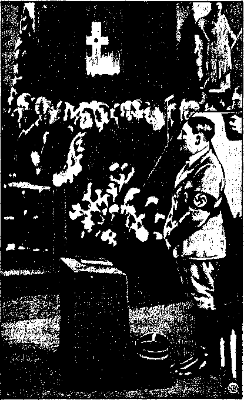
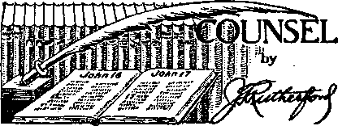

Contents
Appetizers
The Pope’s Responsibility for the
Hundreds of Thousands of Prisoners
Witness Continues Despite Opposition 5
Could a Whole People Worship a Liar? 6
Inordinate Vanity and Cowardice
Bedtime Stories of Persecution
Preparations for Big Putsch in Britain 12
Fighting for Liberty in Hubbard, Ohio
Counsel by J. F. Rutherford
Italy—“Mare Nostrum”; Loves to Kill
The New Government
Shintoism in Japan and in Korea
Published every other Wednesday by WATCHTOWER BIBLE AND TRACT SOCIETY, INC, 117 Adams St., Brooklyn, N. Y„ U. S. A.
Editor Clayton J. Woodworth
Business Manager Nathan H. Knorr
Five Cents a Copy -
fl a year In the United States
31.25 to Canada and all other countries
NOTICE TO SUBSCRIBERS
Remittances: For your own safety, remit by postal or express money order. When coin or currency is lost in the ordinary malls, there is no redress. Remittances from countries other than those named below may be made tn the Brooklyn office, but only by Internationa) postal money order.
Receipt of a new or renewal subscription will be acknowledged only when requested. Notice of Expiration is sent with the journal one month before subscription expires. Please renew promptly to avoid loss of copies. Send change of address direct to us rather than to the post office. Tour request should reach us at least two weeks before the data of issue with which it is to take effect. Send your Old ns well as the new address. Copies will not ba forwarded by the post office to your new address unless extra postage is provided by you.
Ppbrtshed also in Afrikaans, Bohemian, Danish, Dutch. Finnish, French, German, Greek, Hungarian, Japanese. Norwegian, Polish, Portuffuese, Spanish. Swedish, Ukrainian; also special Australian edition in English.
OFFICES FOR OTHER COUNTRIES
England St Craven Terrace, London, W. 2
Canada 40 Irwin Avenue, Toronto 5, Ontario Australia 7 Beresford Road, Strathfield, N.S.W. South Africa 623 Boston House, Cape Town
Entered as second-class matter at Brooklyn, N. Y., under the Act of Jlarch 3, 1379.
Definitions -•
Socialism: If you own two cows, ' you give one to your neighbor, ' , Communism; You give both cows to the government and government gives you back some oftheinilk.
Fascism: You keep the cows, but give the _ milk to the government, which sells some' of'ft-’’ back to you.
New Deal ism: You shoot one cow, milk the other, and then pour the milk down the sink. —Oregon Merchants.
Too Bad Ho Lisped .
“Sad about the ^disappearance of Prof, Hill,” said James, polishing his brassie, “He was a profound thinker,”
“Yes—always thinking, no matter where he was,” replied another clubman, “Fancy, the last time I saw him we were bathing, and he suddenly called out, Tm thinking! I’m thinking 1’ ”
“You idiot!” roared James, “The professor lisped.”—Kansas City Star.
One Way to Find Out
The fat man and his wife were returning to their seats in the theater after the intermission.
“Did I tread on your toes as I went out?” he asked a man at the end of a row.
“You did,” replied the other grimly, expecting at least an apology.
The fat man turned to his wife.
“All right, Mary,” he said, “this is our row.” —Labor.
Hatpl Murder!
A young lady not familiar with the switching language of railroad men chanced to be walking near a depot*where a freight train was being made up. One of the brakemen shouted: “Jump on her when she comes by, run her down by the elevator and cut her in two and bring the h'ead end up by the depot.” "Help! Murder!” screamed the young lady as she fainted and fell into the arms of the conductor. -
Courtesy of a Chesterfield
Farmer; “Didn’t you see the notice, ‘Private ; No Fishing Allowed’ ?”
Angler: “I never read anything marked ‘Private’,”
“And in His name shall the nations hope.”—Matthew 12:21, A.R.V.
T J.TT.J,' ' ' ' ' ---T — --.......... T.-’3 ~T~~. . - ' ■■ ^,.'r=±
Volume XXI Brooklyn, N. Y.? Wednesday, October 18, 1939 Number 824
THE ease and frequency with which the “bleasings” of the “church” have been showered upon Mussolini, Hitler and Franco for their separate or joint campaigns in Ethiopia, Albania, the Saar, the Rhineland, Austria. Czechoslovakia, Memel, Danzig, and Spain, and fifteen centuries of European history, prove that the Roman Catholic Hierarchy is the greatest mischiefmaker on the planet.
While it is not averse to ruling directly, as, for example, at the racket headquarters at Vatican City, yet it gets better results when it has its faithful sons in positions of responsibility as kings, dictators or presidents, where they can be played one against the other to suit the circumstances of the hour. Satan’s world ed. Now the world is again in tumult, as a result of the activities of the “Practical Catholic”, Adolf Hitler. This time the pope will succeed in establishing peace, but his price will be the control of the whole world. On this point, at page 292 of the book Enemies, Judge Rutherford said:
(In Three Parts—Part 1)
Hitler in St. Hedwig’s Cathedral, Berlin
The prophecy of the Lord shows that modem Tyre, the Catholic organization, commits fornication with all the nations and gains her desire. When the Hierarchy has gained complete temporal power of f he earth, that will in her mind fully establish the conclusion that her desire has been fully accomplished, and then she will say “Peace and safety” (1 Thessalonians 5:3); and then the “ten horns”, that is, all the ruling powers of the nations, “receive power . . . with the beast,” the League of Nations combine being in fact a league of Fascism or
is always in disorder, and it is in this disorder that the Vatican has its greatest opportunity.
In the last World War the pope tried to bring about a pehce, described at the time as “pro-Roman”, which would have been of great benefit to his establishment. It was not acceptcombined Fascist governments, dominated by the Roman Catholic Hierarchy. “And the woman [Devil’s visible religious organization, the harlot] which thou sawest is that great city [the Hierarchy organization], which reigneth over [combined Fascism,] the kings of the earth.’’-Revelation 17:12,18.
The desire to be umpire of earth’s affairs is always in the mind of every pope. Consolation for August 23, 1939, calls attention to proposals for a peace conference that the pope called or suggested calling prior to the outbreak of hostilities between Germany and Poland.
In his series of collection envelopes on the one for the third week of September, 1939, Andrew J. Brennan, bishop of Richmond, Va., is made to say, “Responsibility to bring about and maintain a lasting peace, rests primarily upon the shoulders of Catholics in all nations.” The philosophy of this is that General Franco is a Catholic; if he had kept the peace in Spain, then Spain would not have been torn asunder by civil war. Mussolini is a Catholic; if he had kept the peace in Ethiopia, the lives of thousands of innocents would have been saved. Hitler is a Catholic • if he had kept the peace in Czechoslovakia and Poland, thousands would now be in comfort who today are either dead or in utter wretchedness. Japan is under Catholic influence, which partly accounts for the fact that there is no peace in Asia.
John T. Archbishop McNicholas, of Cincinnati, wants all Catholics in his realm to pray to Christ to grant peace to the whole world. If they thus pray they will be wasting their breath. The greatest war of all time, Armageddon, is ahead. The only survivors of that time will be those who are firmly on the Lord’s side, on the side of true Christianity, and against the Devil’s religion, which is its exact opposite, and of which the Roman Hierarchy is chief spokesman. ..
A message from Vatican City stated that President Roosevelt had sent a personal message to the pope inviting him to call on him for assistance in connection with any international political scheme for '‘peace” he might have on hand. The message was conveyed, hot in a state paper, but by word of. mouth, through President Roosevelt’s close personal friend, Monsignor Amleto Giovanni Cicogna-ni, apostolic delegate to Washington.
Says Martin Harbeck:
As far back as 1923 and 1924 Catholic priests and writers in Bavaria advo-cafe(i a crusade against Jews, Communists, Pacifists and others, and * preached the superiority of the Aryan
race. The storm troopers are nearly all very young men, taken, chiefly from Catholic families. They wear black uniforms, with a skull and • crossbones bn their hideous helmets.
Germany, in man power, in money and in raw materials, is today less able than in 1914 to conduct a war with England and France on the other side. The arrogant dictators know that the so-called “democratic” and chiefly Protestant nations are readily bluffed by the Catholic-Fascist-Nazi combine.
There is sufficient evidence that neither the Germans nor the Austrians nor the Czechoslovakians ever had the opportunity of a free and uncontrolled ballot. It is now history that Hitler was greatly aided in his apparently miraculous rise to power by the Catholic element..His flfst success was in Bavaria, the most Catholic part of Germany.
Hitler speaks only behind bullet-proof glass, and for public demonstrations generally uses a double. Recently one such double, who was called his chauffeur, was shot and killed.
My estimate is that forty percent of the people, the young who were greatly benefited by the Hitler regime, support the present Nazi government; a further forty percent are frightened into subjeer tion; and only about twenty percent are engaged in more or less active opposition.
The economic crisis is world-wide; and being.a result of the World War, it can not be charged to any one government. But imported goods, particularly foodstuffs, are scarce in Germany. There is a marked shortage of coffee, butter, eggs, pork, good flour, sugar, onions and fruits; also of silks and woolen goods, ■ .
Dr. Crone and other officials .of the so-called “Department of Justice” of Germany have freely admitted the ever more difficult problem of dealing with the many hundreds of thousands of prisoners created by the Hitler regime. Recently I had the pleasure of meeting a former German Minister of Justice, Dr. Breitscheidt. He declared that he greatly respects the Bible Students, or witnesses’ of Jehovah, 6,000 of whom are imprisoned in - Germany; because they are the only group of Christians suffering martyfSom for their faith and loyalty to God and to His Word. These ar-e the only ones who refuse to accept the Totalitarian religion; which places the State above God; and they refuse to honor or worship the human Fuehrer as God.
The treatment of prisoners is not the same in all parts of Germany, and those actually in prison are less cruelly treated than those in concentration camps. But the crimes committed by the Nazi-gangsters, with the official approval of the present German government, cry to heaven; and if only a portion of them were known and believed by the honest people of the world, that knowledge would certainly cause all the good people in the world to turn away from such barbarians in disgust and abhorrence. ■ .......‘
'A truthful report of hundreds of such cases of ill-treatment of Jehovah’s witnesses in Germany was recently published by the Europa Publishers, at Zurich, Switzerland, in the German language, and now by the Presses Universilaires, in Paris, in the French language. The title of that book is "Crusade Against Christianity”, Having read this book, a number of well-known writers, professional men and foremost journalists in Europe have expressed their deepest sympathy with these suffering and persecuted Christians. For example, Dr. Thomas Mann, the bearer of the Noble prize for literature, wrote concerning Jehovah’s witnesses ; '■
I have read your book and its terrible documentation with deepest emotion. I cannot describe the mixed feeling of abhorrence and loathing which has filled my heart while perusing these records of human degradation and abominable cruelty. Human, speech fails in the presence of the unspeakable perversity revealed in these pages, on which are recorded the awful sufferings of innocent men and women who firmly hold fast to their faith. In viewing such indescribable conditions' the voice would fain be silent, but to keep quiet would serve only the moral indifference of the world, and further the despicable non-interference policy, and make for a guilty conscience. Will it be possible to shock the world oven for a moment by your presentation of these disgusting facts? One hardly dares to hope for it. At any rate you have done your duty in publishing this book and bringing these facts to light. It seems to me tliat. there is no greater appeal to the world’s conscience.
Pastor T. Bruppacher, a thoughtful and noble-minded Protestant minister, wrote:
While the German church controversy enjoys the favorable interest of official Christendom, we here have an' unobserved company, standing and Suffering in the foremost posts. While, men who call themselves Christians have failed in the decisive tests, these unknown witnesses of Jehovah, as Christian martyrs, are maintaining unshakable opposition against coercion of conscience and heal,hen idolatry. The future historian must some day acknowledge that not the great churches, but these slandered and scoffed-at people, were the ones who stood up first against the rage of the IS'azi demon, and who dared to make opposition according to the faith. They suffer and bleed because, as Jehovah 's witnesses and candidates for the-Kingdom of Christ, they refuse the worship of Hitler and the Swastika, These peculiar Christians are accounted worthy to suffer for His name’s sake, and they have humbly proved that they really know how to. def end their high title—that of Jehovah’s witnesses. Whoever permits these documents to speak to him in all their sincerity will begin to see the maligned Bible Students in a new light. Tic will riot again judge them in his own self-righteousness.
; The work of Jehovah’s witnesses, of informing the people of good will about Jehovah’s kingdom, and announcing the destruction of . the. wicked at Armageddon, progresses despite the opposition and OCTOBER 1.8, .1930 persecution hi Germany. The witness work is increasing particularly in France, Belgium, Netherlands and Switzerland, Thousands of people of good will are gladly hearing the message of the truth and are then leaving the Devil’s organization. Where formerly were small companies for Bible study there are now larger assemblies and.increased activities. In Germany, Jews, Communists, Socialists and other groups are silenced to a. large extent by the terror of the blackshirts, but not so Jehovah’s witnesses. It is often reported how they continue to speak of their faith, and they are even heard to sing joyfully’ in prison cells and concentration camps.
The following is from, a Swiss newspaper, “The St. Gall Daily”:
The French journalist, Jean Fontenoy, recently obtained permission to observe with his own eyes the life in the concentration camp Oranienburg. The commander of the camp, a general, personally took the journalist through the camp. A. lengthy report has appeared in the "Journal” regarding this inspection. We give, herewith an abbreviated but faithful report concerning what the commander thinks of the Bible Students—Jehovah’s witnesses- -and how he tries to solve the problem they create for him,
"The Bible Students,” grumbled the general. "I have erected special barracks for them, where they sire isolated behind barbed wire which is electrically-charged, in order that they may not got in contact with the other inmates. It is forbidden for others to come closer than seven yards to the barracks of the Bible Students, Hut nothing avails. Tf I forbid them to smoke, they say they don ’t smoko at all. Tf I permit them to write only one letter every third month, they do not even write that one letter. It is really distracting. Recently the wife of such a Bible Student name and begged for her husband’s release. I had the man brought, but he looked at his Wife ns if ho did not know her. Sho cried and pleaded, saying, ‘ We have nothing to eat and 1 have no one to help) us. ’ The Bible .Student answered, 'You have Jehovah.’. The woman; 'I plead with you to sign the pledge and return to us.’ The man: ‘Go and pray more earnestly to Jehovah. ’ ” .
The general engaged in a dialogue between himself and Johann Huber, 27 years of age. He asked, "Why are you in the concentration camp?” "Because I have worshiped the Lord.” "Which Lord?” "Jehovah.” "Do you acknowledge our Fuehrer as your head or superior?” "I do not know of whom you speak; my superior or head is Jehovah.” "Who am I?” "You are one of Jehovah’s creatures.” "Arn I your superior or not?” "You are a creature of Jehovah.” "Do you have to obey me or not?” "I have to obey Jehovah.”
The general turned to me with a bitter smile and said, "You cannot do a thing with them, neither with mildness nor with harshness; it is all of no avail..’! This dialogue had .been listened to with visible pleasure by about- fifty other prisoners near by. The commander asked, ‘ 'Did ydu observe these others? Do you Understand now. why I keep the Bible Students apart from the others? They would. start a small revolution .'within a'.few hours; .'they are. .rim worst, of them all.” ■ , A
■*" This discussion had caused me to think
and later, at noon, I referred again to this theme of the Bible Students and said, “You have here 450 Bible Students VjitH'®" m this eamp, but do they really belong “ >m Uere? Most of them must be good and harmless people; they seem to me to be somewhat like saints, at any rate really harmless. ”
A Berlin official accompanying the party through the camp stated it is hard to find the secret places in Germany where the Bible Students’ literature is still being printed; no one carries names or addresses and no one betrays another. When 250 were arrested at Hamburg and their papers and press were confiscated, and it was thought that this would stop the circulation of a certain magazine, within two weeks after the raid the paper reappeared as before and the police had not been able since then to discover the place where printed, nor any of the distributors.
This firmness of faith and unparalleled courage causes many who witness the terrible persecutions to inquire as to the source of such steadfastness. A number of cases are known where prison guards and other prisoners have forsaken all else to put themselves on the Lord’s side while yet there is time.
A righteous indignation against the instigators of the persecutions of Jehovah’s witnesses, namely, the Catholic-Fascist combine, wells up in the heart of every real Christian. Thia persecution of Christians is a fulfillment of Divine prophecy. Other prophecies show that the day of accounting for the great bloodguilt which the present generation has heaped upon itself is at hand.
The statement that Hitler is a close student of astrology, and that he maps his course by the stars, is only another way of saying that he is guided by demons. The teaching that any man is guided in his course by any star or any combination of stars is a denial of every truth contained in the Scriptures. That does not mean that the demons are ignorant of what is going on in the world, and it does not mean they cannot twist together plausible statements supposedly but not actually in harmony with the. movements of the stars. So it is not without interest that in her dispatch to the Chicago Tribune, from Berlin, on July 13, Sigrid Schultz, who familiarized herself with the teachings of Hitler’s astrologers, reports one of them as saying:
Russia and Germany together will settle the Polish problem. The world wall be astounded by the developments of the next few weeks. When Russia and Germany co-operate the British empire will automatically fall asunder.
Hitler is guided by “voices” (which are the voices of wicked spirits), and it is all in vain that Churchill appealed to him to consider the consequences of a single rash act which might ruin bis life’s work, and that Eden and Halifax tried to reason with him. The demons are out to wreck the world, and only God’s almighty hand can frustrate their design. Human wisdom will be unavailing.
Nothing that the man says can be believed. He is probably the world’s most shameless liar. Somebody noticed that the letters in A H-I-T-L-E-R and T-H-E L-I-A-R are the same.
Early in 1937 laws were passed in Germany prohibiting Germans from participating in the war in Spain. At that very time the German troops were pouring in, and it was German transport planes, in the very first hours of the conspiracy, that carried thousands of heathen Moors into Spain to there fight the pope’s battles. Said Thomas Mann, German author, in an address at Princeton University:
Germany fell into the hands of leaders so depraved that perhaps in all history there has been recorded no second case of such dishonor to spirit and intellect, justice, truth and freedom. Their reign of violence has made it impossible for anyone who has some feeling for human dignity and moral responsibility to breathe the air of that country.—New York ’World-Telegram.
On Monday, September 4, only the next day after Britain declared that a state of war prevailed as between it and Germany, the British Government bombarded the people of the Reich with 6,000,000 leaflets containing assurance that the war is not against the German people but against this colossal liar, Hitler, trained by the Roman Catholic Hierarchy and by the Devil for the work he is now doing. The broadcast leaflets contained in German these statements:
“He [Hitler] gave his word that he would respect the Locarno Treaty; he broke it.
“He gave his word that he neither wished nor intended to annex Austria; he broke it.
“He declared he would not incorporate the Czechs in the Reich; he did so. '
“He gave his word after Munich that he had no further territorial demands in Europe; he broke it.
“He gave his word he wanted no Polish provinces; he broke it.
“He has sworn to you for years he was the mortal enemy of Bolshevism; he is now its ally.
"Can you wonder that for us his word is not worth the paper it is written oaf”—New York Post, September 4, 1939.
Oddly enough, the answer to the question, “Could a w’hole people worship a liart” is a most emphatic Yes. The world as a whole has done that very thing from the time of Lucifer's lie in the garden of Eden until this, very moment. The Devil, using religion and ’ religionists as his vehicles of expression, has so thoroughly established in the minds of the people that they live on after they are dead that “the whole world lieth in the wicked one” and there are few that believe the statement of-the Creator himself that “the dead know not any thing”.
Below is set out some of the evidence that many Of the German people have actually made this Jesuit-trained man. Hitler, into a “god” (as Moses was made a god in Pharaoh’s eyes). In its Celebration Number, in answer to the question, "What does The Fuehrer mean to you?” the Schwarzs Korns published the following. President Roosevelt, who wants the people to have more religion, and the New York Chamber of Commerce, that wants the people to have, more religion, and all the other panjandrums that recommend religion as a eure-all, would do well to ponder deeply.
1) (A Viennese) “My Fuehrer gave me not only a political ^Weltanschauung’ but also a religion. He gave me a faith, which even as a child I had never possessed. This faith is a faith in ourselves, in our strength and our greatness, in the mysterious power of Blood, our Soil and the German nation. ...”
2) (An S.S. Man.) “Even to attempt to put into words what I feel for my Fuehrer appears to me profane. ... It makes my heart heavy to think that the Fuehrer today belongs to so many, whereas during the time of our early struggle, he belonged only to us, a comparatively few. J am jealous of every person with.whom J must share him. May 1 be forgiven for this sacred egoism.”
3) . (A Party member in Berlin) “Formerly we were brought up to be religious, trained in a faith divorced from reality, which seemed impersonal, abstract and un-Gcrman. This outlook did not improve roan, hardly strengthened him, but rather deprived him of courage and initiative, . . . Faith in the Fuehrer and his work have given me strength to force friy life to higher things. In this godless, mammon-worshiping world, tom with hate and murder, this world of insanity and chaos, a temple of light has ariseh, throwing its rays afar snd pointing to a future far more beautiful than our past.”
4) (A lawyer from Dortmund) “We know that we are in the grip of a feeling whose essence and depth we can scarcely determine and which renders' us dumb. Reverence, love, loyalty, gratitude, self-ihnegation—all make up this feeling which yet Surpasses them all. But the most revered father, the most deeply loved mother, the most loyal wife ahd the most trusted friend rouse in our hearts music far less exalted than the song our souls sing to the Fuehrer.”
5) (A Party member from Berlin) “I left the Church with the firm conviction that the Christian religion was a man-made faith professing to be the will of God, but having nothing in common with that power which we call God, I believe the fellowship of blood and race is a fellow-ship much more desired by God than all the religious fellowships built up by man. I frequently ponder, could I face my Leader and Father, Adolf Hitler, if he knew my thoughts and my work. My religious observance is a daily hour of quiet thought. . . . And then an inner glow- comes upon me, an indescribable feeling of satisfaction, if after mature consideration, I come to the conclusion that my father, Adolf Hitler, would bless this or that action of mine.”
6) (Another Party member) “Every flower that blooms, blooms in gratitude to him; every apple that ripens, ripens in gratitude to him.”
7) (A Hamburg woman) “I should like to say once Cor all, that the lofty teaching of my Fuehrer .is now my religion, the German religion, and I can think of nothing finer.”
8) (A Reader from Frankfurt) “What misuse is made by men of the word ‘Fuehrer’. This word should only be applied to Adolf Hitler himself and ive should impregnate our people from youth up with reverence for this word as the Christian Church reveres the name of God.”
9) (A Mother in Unterammergau) “My children know the Fuehrer as a man, who orders all things, rules all things, who built the world. The Fuehrer is for my children that visible Being, which we as children were taught to recognise as God. . .
These people worship Hitler; Hitler worships the Roman Catholic system in which he was trained --it is his god; and the Roman Catholic Hierarchy worships and serves the Devil, manifests his spirit and is his most devoted and most honored child. Ths chain is complete. The German people that worship Hitler arc worshiping the Devil, whether they know it or not.
The German people in all lands have done all they could to make a fool of Hitler, and he has cheerfully gone them one better every time. The golden crown presented to him at the middle of June is said to have been paid for by Nazis in 61 countries. Those at Buenos Aires alone contributed 31,455 pesos ($7,700) of the amount, so says the newspaper Crltica of that city.
It is admitted by all who have listened to him that Hitler has the power to produce mass hypnotism of his audiences. Maas hypnotism is mass demonism; but the demons are no fools. They have had centuries of experience, and so they select for their work some man who can be used to "put it across”.1 Hitler is such a man. The following from Mein Kampf shows that even he himself does not fully realize that the power working through him is not himself, but that of WHOM?
Meetings at which I talked about the peace treaties seemed never to end, for I considered this a vital subject and repeated my speech of denunciation again and again in endless repetition;
I gradually put it in better form until at last I was driving a powerful message into the heart of the people. This constant practice in addressing meetings slowly but surely made me elever in the use of the pathos and the gestures needed to sway audiences of thousands.
I began to talk—and kept on talking for around two and one-half-hours—and I at once felt that the meeting was to be a great success. Immediately I was in contact with the audience. After an hour. applause broke out more and more often, in great outbursts, and then ebbed away after two hours, until I finished in that solemn silence which will never be forgotten by a soul who was there, and ■which I afterwards experienced so many times in this room. Almost nothing but the soft breathing of the mass could be heard, and suddenly when I had finished applause rose like thunder, and then release was found in fervent singing of "Deutschland ueber Alles”.
Every dictator is a personal coward, and has to be; for his life is constantly at stake, because of the wrongs of which he is guilty. The claim is now made that Hitler has a private tunnel twelve miles long, between his hideout at Berchtesgaden and the city of Salzburg, enough to give him a good start if it ever becomes necessary for him to make a quick getaway.
His plane is of sufficient capacity to fly non-stop from Berlin to New York, and it has been fitted with every comfort and safety gadget known to man. It has four engines and a speed of 220 miles an hour. It is not a bad investment for him, and he may need it yet. New York city would find an empty apartment for him and he would hold the headlines for three days, maybe four, before he shriveled to his true size and passed out of public notice.
In order to put over its seizure of the world the Roman Catholic Hierarchy is bound to pretend that it is suffering persecution, even while its faithful sons are breaking every law known to man. These columns have contained many pages of evidence that there is no persecution of the Roman Catholic Church in Ger<-many. There is fresh evidence for this' issue, and here it is, from Catholic sources:
Little by little the truth gradually leaks out on all subjects, for the reason that the Lord himself has stated that "there is nothing covered but shall be revealed”. In view, therefore, of the oft-repeated yarns in the kept press about mistreatment of the Catholic Church in Germany, it is with some interest that the following statements are taken from a column by the Catholic writer Bertram de Colonna, published in the London Catholic Herald:
While it is true that there have been differences between some Catholics and officials in Germany, there has never been any prohibition of church services, nor have any churches been burned and sacked, or priests ill-treated or murdered in Germany.
Anyone who takes the trouble to visit a Catholic part of Germany will see that priests and lay brothers go about their business untroubled. Lay brothers serve in the beer rooms attached to monasteries in many parts, and groups of excursionists, .largely wearing badges of the National Socialist Party, drop in there.
The London Catholic Universe states that on Hitler’s birthday Cardinal Innitzer ordered all Austrian churches to ring bells, fly the Swastika flag and say special prayers for the Fuehrer. Does that look like persecution?
Mosley, Britain’s would-be Hitler, in a speech at North London, said of religious persecution in Germany:
J think the clash between State and Church in Germany will soon end. There has, after all, been friction between the temporal and spiritual power in Germany for centuries, on and off. At present more money is paid by the State to the Church than ever before and more people attend ehureh than ever before.—In London Catholic Herald.
Disposing now of a couple of widely publicized claims of "persecution”, here are the facts, and facts are all anyone should desire. Read them and judge for yourself. Hereafter, in what was once Austria, there will be joint control of promotions in the Roman Catholic’s clergy. There are to be no changes -in personnel except such as meet Nazi approval. The Nazis will also decide who are to study for the priesthood. The New York Daily News devoted its entire front page to the idea that the' Nazis had stormed the archbishop’s palace 'at Salzburg, whereas the simple facts are that-the building belonged to the Government since 1802, and the latter part of April notice had been served on the archbishop to look for other quarters. He neglected to do so and, after a
month’s delay, one time when he came back he found the landlord in control and himself dispossessed. Subsequently the archbishop Sigismund Waitz was offered the free use of several rooms in the palace, but he thought the Hierarchy would gain more by maintaining its pretense of “persecution”, so he took up his residence in one of the many monasteries with which the neighborhood is cursed, instead.
The basis for stories of persecution of the Catholic Church in Austria seems to arise from the fact that up to September 1, 1939, each Homan Catholic priest received from the government an allowance of 120 marks monthly, but after that date Catholics, like other persons, would be taxed to maintain their churches and priests. Hitherto; because theirs was the State church, Catholics did not pay any religious tax.
Having conspired with Hitler to destroy the Republic of Czechoslovakia, and his own priests having been in the forefront in the betrayal of that country, once the center of Protestantism in Europe, the pope now tells the Slovak premier that he will need “much perspicacity and prudence, a great deal of brotherly feeling”, etc., etc., to get along with tiie present situation (in which everything of any value in the country is being lugged off to Germany and the Czechoslovakian people are being turned into slaves).
Under the title “Who Sent Reverend Kochis to Make Speeches Here?” the Gary .(Ind.) Post Tribune quoted the “Reverend Father” John Kochis as lauding the German government to the skies and saying that the people of Slovakia are perfectly satisfied with it. The Post Tribune knows perfectly well who sent the “Reverend Father” Kochis to Gary. It also knows that if it mentioned the Roman Catholic Hierarchy in that connection it would lose most of its advertisers and subscribers. But, viewed from a distance, it is a safe bet that it will be disciplined for its editorial which winds up with this paragraph:
, When Reverend Kochis attempts to present the octAber is,
Hitler thugs, gunmen and plain assassins as worthy rulers for their own protection he is dealing in a brand of bunkum that won’t go far in this country.
The editor of the Post Tribune is no fool. He knows that the “Reverend Father” Tiso betrayed what was left of his country into the hands of- Hitler, and did it to crush Protestants throughout the republic. Earlier in the editorial he said:
Who is this Reverend Kochis, and what is his purpose in this country? Was he sent over here by the German-controlled government of Dr. Tiso to pull the wool over the eyes of Slovaks living in America ?
The London Catholic Herald contained a five-column interview with Sir Oswald Mosley entitled “Mosley Discusses Need Church and State Clash”, in which Mosley made it clear that his outfit, if it gains control of Britain, will “always treat the spiritual and moral authority of the Vatican in international affairs with the utmost respect”. In the next issue the Herald seemed to be referring to its own readers when it Used the headline which introduces this paragraph. Mosley admits that he has more Catholics in his outfit than their proportion in the country would warrant. It is all as plain as day.
Our Sunday Visitor takes gleeful note that the Rome-directed Germany-Italy-Japan axis could, in a few years, crush the democracies by birth rates alone. It mentions that while, in England, other schools are forced to close because of decreased attendance, yet Catholic schools in that country have actually increased in number, even though there has been a slight decrease in attendance.
Speaking of conditions in France, Our Sunday Visitor of July 16, 1939, also said:
The older ones among our readers will recall that, nearly forty years ago, the then President of France dissolved the Concordat which France had had with the Holy See, and not only forced all Religious Orders to give up the work of teaching in school, but forbade them to wear their religious garb. Such a change lias eome over France in recent years that these laws have been disregarded, but because they are still on the Statute Books, there is now a movement in Parliament itself to repeal the hostile legislation. In fact, a bill is ready for presentation to Parliament; already backed by more than 200 Deputies, to repeal the law against Religious Orders. .
It is hard to choose between murderers, and say which: is the more shameless,; Hitler with his rapes of Austria and Czechoslovakia, or Mussolini with his rapes of Ethiopia and Albania, or both of them in their rape of Spain. The pope has just now "blessed" Mussolini, publicly asking God’s blessing on his head. Now he should dp the same for Hitler, and thpp for Al Capone, “Father” Coughlin and Judge Manton.
Within the past few years three prominent persons have been made Knights of the Order pf the Annunciation. The first was Emperor Haile Selassie of Ethiopia, the second was King Zvg of Albania, and the third was von Ribbentrop, the German Foreign minister.
>|A Iu every land the Roman Catholic Hierarchy trains its spokesmen to ♦ boast of their patriotism. It is a
settled policy of the “church”, and IKKKfl is policy only. It is perfectly willing to have millions of Catholics killed on each side in any war, if only the interests of the racket operating out of Vatican City are taken eare of. '
In an address in New York city, as reported' in the Baltimore Sun, the “Most Reverend" James E, Kearney, bishop of Salt Lake, made the statement,
“There is only one flag for our children and that is the American flag. The children are taught to salute it under penalty of disrespect to Almighty God.”
. The bishop could use the same argument to Hitler regarding saluting the swastika and it would be just as true. Indeed, Catholic bishops in Austria and Germany have repeatedly urged their flocks to vote for Hitler and to support him in every way in the work of the Devil in which he is engaged.
The Commonweal, a Catholic magazine, seems to hit the nail on the head when it says of “Reverend Father” Coughlin that he is given to “all too pious acceptance of propaganda from a party whose Fuehrer proudly boasts his machine is based on huge lies”. That is an ingenious way of calling both Hitler and Coughlin liars in a single sentence. And it diverts attention from the wicked Hierarchy itself.
The Roman Catholic Hierarchy is not being persecuted in the United States, but it is persecuting others for the very same reason that it is now sympathetic with the idea of another huge war. Tt hopes to stop the mouths of Jehovah’s witnesses.
Governor Lehman, of New York State; is
an intelligent, well-read man. He can hardly be ignorant of the more than 2,000 eases of persecution of Jehovah’s witnesses, in almost every state in the United < States, their arrest, imprisonment, beating, choking, tarring and feathering, and other abuse, mainly by agents of the Roman Catholic Hierarchy. How, then, is it that he could say, in his address to the United Spanish War Veterans: .
This country was founded by pioneers who came here to escape political or religious perseeution. Since then millions of others have followed them. They have found happy homes in the New World. When they sailed from their homes in the Old World they left behind the enmities which divide nation from nation, race from race, creed from creed, class from class. The spirit of democratic America will not tolerate such hatreds and divisions here.—In New York Times’.
The Roman Catholic Hierarchy is not being persecuted in South Africa. Far from it. It is doing its best to align the natives on the side of Hitler and the totalitarian states with which he is associated. Under the headline “Nyasa-land and Northern Rhodesia” the London Daily Telegraph of August 1, 1939, contained a report of a discussion in the British House of Lords on the possible amalgamation of the two colonies. One of the speakers was Lord Marley. In one of these two countries (he did-not say which) he said:
In a school for native teachers I found books containing pictures of Berlin, swastikas and “Heil Hitler” and the various insignia of aggressiveness. These came from a German Catholic mission.
Afraid the people will learn some of the truths of history, the representatives of the Roman Catholic Hierarchy in South Africa hollered “Bloody murder 1” because one of the postage stamps in honor of the 250th anniversary of tlie Huguenots showed a sun rising over dark clouds. The Roman Catholic Church was not mentioned in any way, but, for reasons best known to the squawkers and to every student of history, it is believed by the Hierarchy that the dark clouds represent earth’s greatest curse, the Roman Catholic Hierarchy, and its teachings and practices.
In the year 1938 the following I ULi W/democracies did what they could JL to rearm Germany and prepare V/ jfl her for the Munich peace which * ensued. Opposite the name of each democracy is set the number of tons of scrap iron and steel which each such democracy
sold to their avowed and prospective enemy:
United States 462,782
Belgium 244,842
Great Britain 117,818
Netherlands France Luxemburg
For the past fifteen years Germany has been buying the entire output of a Swedish arsenic mine, and storing it, 100,000 tons at a time. At the I. G, works at Essen are 28,000 workers engaged in making bombs which have this arsenic as a base. When the bombs fall there is no gas mask that can withstand the smoke that issues forth from these bombs, As the odor penetrates the mask the wearer becomes deathly sick, yanks off the mask and dies. Persons in this day would be hard put to it to imagine a worse hell than has been developed right here on terra fir ma. The clergy are ready to bless any part of this hell, for a consideration. All the}' ask is that the big Devil whom they love and whom they serve will make it hot for those who are exposing their racket throughout “Christendom”.
Cologne (Germany) Cathedral flying swastika
None of this has been done without the knowledge of the pope, and none of it without his approval. Plenty of newspapermen know this, but fear to tell it, and cannot get the newspapers to put their stories in type even if they do tell it. The exceptions are few and far between, and they have to be mighty careful what they say, “Perdix” is one of the exceptions.
“Perdix,” noted foreign affairs expert, contributes a column to various western papers
OCTOBER 18, 1339 that has something in it besides words. The
Q„ fi„q Tacoma Times and the Santa Barbara News 9J,b(9 press recently carried a column well worth 82,560 reading, which the Times labeled “Perdix 58,219 Points to Pope; Sees Practiced Hand of Vati-
can Behind Political Moves of Europe’s Powers”. This column, published June 21, drew attention to “the. published intimation that His Holiness the Pope would look with apprehension upon a tripartite Anglo - French - Soviet pact” (because that would hinder the loyal Catholic Hitler from overrunning the world), and contained the following paragraph which, for reasons best known to themselves, other newspapermen avoid mentioning.
Economic experts believe the church’s holdings in Greater Germany, which (excluding Czechoslovakia) are reliably estimated at equivalent to about $20,-000,000,000, may have been a determining factor. Also, the Vatican's conviction that German expansion into the east —into predominant Catholic areas—is a foregone conclusion; hence, that a modus viventli with the reich is not only desirable, but imperative. High Catholic circles, incidentally, are convinced that a growing number
of Catholics among German population will in time be a moderating influence per se, and should therefore be cultivated. That Vatican influence has been steadily rising in England in the last two years is an open secret.
As is well known, the rearming of Germany was both physical and mental. Hitler is a past master in the art of rabble-rousing, feebly imitated in the United States by “Father”
11
Coughlin—both trained in the same devilish school, and, to date, both abject followers of and worshipers of the Roman Catholic system. Respecting Hitler’s achievements over the radio (worked out largely by Goebbels, his propaganda manager) Edgar Weir, in the London News Chronicle of April 11, 1939, wrote:
Radio propaganda is like the fascinating eye of a serpent that attempts to hypnotize its victim until it allows itself to be swallowed without resistance. \
Germany has recently developed an entirely new system of expansion. After a period of “build-up” to win the confidence of foreign listeners, they are gradually treated to more and more propaganda describing the beauties of Germany and how smoothly everything works there. Then they are told of the terrible conditions in other countries, including their own. They are taught to be discontented with their own governments. They are promised mountains of gold and good things. Finally, the broadcasts take on an aggressive tone. They become less truthful. What the Germans call “Hetzpro pagan da” and “Atrocity Propaganda”, and of which they accuse the foreign Press and radio, is used with great effect by their own stations.
When the Titanic was finished and started on its maiden trip it was announced that it was unsinkable. It never got across even once. It ran into an iceberg and, after being sliced from end to end, went down off Newfoundland, to rise no more. More recently the Fuehrer completed, at a cost of hundreds of millions of dollars and with the aid of 300,000 slaves, a 400-mile line of forts from Switzerland to the Netherlands. Hitler pronounced the completed line as invincible and impregnable, and within a week the Rhine rose to an unwonted height and swamped machine-gun nests and would have drowned their occupants except that they could and did flee to higher ground. The story came from France. The Germans say it is not true.
Major Hugh B. C. Pollard, English Catholic, has the unique distinction of/ being responsible for the death of 2,000,000 of his fellow men. It was he who, under instructions from higher-ups in his “faith”, illegally flew a plane to Franco the Butcher, then in exile in the Canary islands. He occupied a seat of so-called “honor” in the victory parade in Madrid, because without his treachery the 2,000,000 would never have been slain and Franco would not now be privileged to murder whom he will. It was a Roman Catholic achievement throughout and typical of the history of earth’s most diabolical system of rackets..
No sooner had Britain begun to take refugees from Czechoslovakia than the dreaded Gestapo of Germany began to come in, in the guise of refugees themselves, and they had no sooner than landed when they began the works of intimidation of German servant girls and other German workers as only the Gestapo could or would do.
A sad note, since Britain entered the war, is that the new gas masks for babies were made in gay and attractive colors so that their mothers could teach the little things to play with them. What a travesty this so-called “civilization” has become!
One of the principal vehicles that the Hierarchy uses at a time like this, or at any time, to carry on its work of promoting the rise of the totalitarian states at the expense of the people is the confessional. Speaking of this diabolical system of snooping into the public and private affairs of everybody, Sydney Morrell, writing in the Glasgow Scottish Baily Express, lauds the pope to the skies, exaggerates the number of his followers and spills the beans when he says of the espionage branch of the racket: .
Pius the Twelfth is the head of 375,000,000 Roman Catholics and the Vatican is^thc best informed of all Governments, which is to say that it is best informed on the ways and thoughts of millions of men and women who build up nations. The archbishops and cardinals who send their regular reports to Rome obtain their material from the pastors and parish priests who are intimately in touch with their flocks.
America is part of the ‘‘Seventh World Power”, and is scheduled to go down also before the totalitarian monstrosity which has its real headquarters at Vatican City. It will be grabbed peacefully, if possible, and. politicians, preachers and plutocrats will be used to put it over, but the Hierarchy is not taking any chances and intends to silence Jehovah’s witnesses, law or no law, and utterly regardless of what may be the desires or even the knowledge or intentions of the American people. To do this they have to have the aid of the Press, and that they have, for they control it absolutely. No American newspaper dares buck the Hierarchy. To do so is to lose all its advertisers and many of its subscribers^ and thus to FAIL. - - :
Says Roy Good ri eh, on this subject of the Press and the weak-kneed public officials who do nothing even when the evidence is in front of them constantly:
The Saturday Evening Post of May 27, 1939, features an article entitled “Star-Spangled Fascists”, under a large photograph of a nocturnal conclave of such, in which the An) eri can flag occupies a prominent place. To the average American reader, blindfolded and unwary, this article puts across with power the idea that American democracy is both helpless and hopeless before a few un-American upstarts whose background is dark, whose organizations are secret, and whose mysterious finances “come in over the transom”. This article is eited at random as a fair sample of that which is supposedly and allegedly “best” in American journalism. Such journalism is supposedly and allegedly " uneenso red” an d“ free ”, and is confessedly 100-pereent (or more) “patriotic”.
Pope’s gift to America
Why, in such published articles, is not the darkness of the average unwary reader enlightened with a reminder that democracy has. plenty of old, grayheaded laws on the subjects of sedition and treason? Why is not the publie awakened to know that the mass of published and admitted facts prove beyond all doubt that there are many Fascist and Nazi seditionists and traitors at work in this country, and that the laws have teeth in them for such? Why is real 100-percent democratic action, that is, patriotic law enforcement, not even mentioned, much less advocated ? Whj’ ? The plain answer may be summed up in two words, namely, “Catholic Action”; but from-the sepulcher of a free and patriotic journalism comes only the resounding echo, “Why?”
All national, state and city officials have taken patriotic baths to promote the general welfare of the people who pay them by justly and diligently upholding and enforcing the Constitution and laws of America. Where are these officials while AiaiiT-iean liberties are sacked and exported to Rome? Why is no traitor even “out on bail”? Why do seditionists roam at large with unlimited freedom of press and radio to advocate “bullets instead of ballots” and the impaling of law-abiding citizens on red-hot spikes? Why are such wicked and wholesale crimes camouflaged and countenanced as “constitutional liberties” by an emasculated press and by a supine and cringing officialdom? To real patriotic, law-abiding Americans such as Jehovah’s witnesses, the strong-arm squad makes answer with a cuff and a curse: “Stop telling on them! Shut up!! Salute the flag, and be patriotic like they are!!! Come on with us for a ride! 1!” Democracy?
Catholic Action ? Look in the Watchtower publications, unwary reader, and lift the blindfold!
Cardinal Gasparri left Rome, so Rome dispatches to the New York Times say, for the express job of doing his part in bringing about the opening of diplomatic relations between the United States Government and the pope at Vatican City. He is “to work out a legal framework” for the job, and is sure to have Jehovah’s witnesses in mind.
The New York Times has a headline entitled “Catholic Airmen Gather”.
What is strange about that? A lot is strange. Suppose the Methodists had been parties to the destruction of the governments of Ethiopia, Albania, Austria, Czechoslovakia, and Spain, and had outspokenly proclaimed their intention to seize the United States, and incidentally to murder everybody who teaches differently from the Methodists, and you should see a headline “Methodist Airmen Gather”. Would it make you think? It surely would, if you have.anything above your neck. Somebody’s cat came near getting out of the bag at Los Angeles when “authorities couldn’t locate anyone who would admit owning $70,000 worth of artillery shells and hand grenades stored in a Los Angeles warehouse”. Probably the trail got too hot. After America has been grabbed, as it will be, a lot of the
“authorities” will poke one another in the ribs and laugh at the close calls they had While the conspiracy was on, and how only the eo-operation of the Rome-controlled press enabled them to get away with it.
Under the title “The Coughlin Terror”, James Wechsler, in The Nation for July 22, 1939, has over five pages of exceedingly interesting information regarding the peculiar
conduct of many of the 12,000 Irish Catholic policemen in New York in Coughlin’s so-called “Christian Front”. One of their number boasted that 6,000 of the police are members of the “Front” itself. '
Mr. Wechsler mentions the repeated stabbings, street fights and neighborhood tensions that have come to pass, and how, because of fear of the Catholic Church, the reporters of the New York Times take their stories to the executive offices, not to the composing room, and the antique Herald Tribune follows suit.
A young girl hears one of the Coughlinites making attacks on parties designated only by the word “they”. She timidly asks the speaker who is meant. Immediately a hundred Catholies are kicking and pushing and pummeling, and two men grab her and throw her down. She is rescued by two policemen, but no arrests are made.
Samuel Applebaum, for saying to a husky Irish Catholic gangster in Union Square, “We Jews also fought in the World War,” was attacked and stabbed and at last accounts the ease had been postponed four times.
Coughlin’s followers sell his paper “Social Justice” all over New York, but when a gentleman who believes in fair play was handing out reprints from the New York Post showing where Coughlin had been repeating the very words of Goebbels, John Dugan (guess hi$ “church”) walked over and without warning knocked the man senseless on the ground. Dugan offered no defense, was praised for his frankness, was told to count thirty before doing it again, and sentence was suspended. At his trial one of the judges on the bench admonished witnesses to disobey the command of Jesus Christ, the Son of God, and to refer to Coughlin as “Father” Coughlin.
By contrast, when Thomas Maloney called a girl who was passing by a “Jew bastard”, and Nathan Smulin, also a passer-by, seized one of Maloney’s papers and slapped him with it, Smulin1 was arrested, not Maloney, end Magistrate Burke (guess his “church”) added “malicious mischief” to the charge of simple assault and held him in $2,000 bail.
When a public-school teacher started to argue with one of the “Social Justice” salesmen she was called vile names and jostled, and when a near-by storekeeper went to her rescue he was arrested. The salesmen of “Social Justice” have developed the lying technique of punctuating their cries of the name of their paper with expressions such as “A big Jew hit me” or “The Jew spit on her”. And this method works. ‘ :
At Rockaway Park, where “Social Justice” has been sold on the streets for months, when a man undertook to sell “Equality”, telling the other side of the story, his papers were thrown to the ground, and as he stooped to pick them up he was kicked in the head; and while he lay sprawled on the ground one of the two idle policemen standing by fractured his skull by a blow with his club. Fine officers of the law! . ,
On the other hand, at Union Square, William Frank, previously arrested for raping a ,minor and for burglary, accosted a young girl, calling her a “red whore”, but because he was selling “Social Justice” his sentence was deferred. In the court of Magistrate Michael A. Ford, Miss Florence Nash, another abusive salesman of “Social Justice”, was given a suspended sentence of thirty days in the workhouse. All she had to do was to weep-a little. The magistrate did say to her, “He who instills such ideas in your head, be he a priest or anyone else, does not belong in this country.” Coughlin can take that-or leave it; and he will probably leave it.
Of course, it is enough of a disgrace to be a Coughlinite. That of itself is bad enough. It is well known that Allen Zoll was chairman of the meeting, addressed by numerous Catholic priests, which resulted in the picketing of radio station WMCA because it would not broadcast Coughlin’s .addresses. It seems that five days after the Coughlinites tried to break up the meeting of Jehovah’s witnesses in Madison Square Garden, Zoll thought the time had come to cash in, so, as alleged, he offered, for the sum of $7,000, to have the picketing of WMCA cease and was paid $200 in marked money, cash in hand. Then he was arrested and jailed. ,
(To be continued)
HUBBARD, Ohio, is only a small village of about 2,500 inhabitants. Yet, in the more recent past, it has assumed the position of censoring other people’s activities. It has gone on record “against God’s kingdom”.
In the following I shall relate a remarkable story of chicanery on the side of Hubbard, and of faithfulness on the side of Jehovah’s witnesses.
Some months ago a company of Jehovah’s witnesses was organized, a hall was rented in Hubbard, and from the very small beginning of 8 publishers this company rapidly flourished all the way up to 28 publishers. The enemy did not like that.
Like all companies, this company began walking on the sidewalks of Hubbard, advertising their public meetings. The religionists there, led by one “Rev.” Brennan, Catholic priest, objected strenuously to the sign “Religion is a Snare and a Racket” and caused the police to remonstrate with the witnesses.
On May 13, a Saturday, the witnesses walked up and down Hubbard streets. They were stopped by the marshal. He told them they had to get a permit. The witness went on, heedless of this marshal’s warning. On May 15, the very next legal business day, the council of the village scurried together, which meeting resulted in the concoction of “An Ordinance of Emergency” ostensibly directed against Jehovah’s witnesses. Ordinarily, hereabout, it takes three readings to make an ordinance lawful. In this ease it was done overnight. This ordinance made the securement of a permit mandatory. The speed with which this ordinance was enacted, the language in which it was couched, and the extraordinary power it grants the executive, form only a thinly veiled attempt at coercion and intimidation.
Thus they hoped to stop the work of Jehovah’s witnesses. But Jehovah’s witnesses' do not scare. On May 27, Hubbard police picked up two men, and charged them with violating this ordinance. A trial was set. The arrests took place at 6 p.m. on Saturday, and only fourteen hours later Jehovah’s witnesses retaliated with a blast of publicity. Fifteen thousand folders entitled “Two Christians Arrested in Hubbard” were spread all over the Mahoning Valley, inviting the people to come to a Protest meeting to be held at the hall of Jehovah’s witnesses at Hubbard at 3 p.m. OCTOBER 18, 1839
Six hundred people arrived. A loud-speaker equipment was installed on the premises and outlets were arranged for on the grounds surrounding the building, which were under lease by Jehovah’s witnesses. As the speaker progressed, about ten minutes, Marshal Greer appeared and insisted the loud-speaker be disconnected. Jehovah’s witnesses refused to yield. Finally, Greer, heroically, pulled his gun, and tore down the equipment, and thus broke up a peaceable assembly of Americans without a warrant of search and seizure.
Jehovah’s witnesses did not take that lying down. On the following Saturday, June 10, 85 walked into Hubbard featuring signs. Thirty-four were picked up by the police, among them 18 children, and, without due process of law, were incarcerated for two to two and a quarter hours and then released without filing charges. Jehovah’s witnesses immediately countered with twenty damage suits against the officials of Hubbard for $5,000 each, for false arrests, and for defamation of character. Then a definite plan of resistance was put into action, a slow war of attrition began.
1. Fifty thousand pamphlets, telling the story of Hubbard persecution, were printed and widely distributed,
2. On all highways leading into Hubbard land was leased, and huge signs “Hubbard ig Unfair; Hubbard is un-American” were erected, and these picket posts were manned by faithful witnesses, and for eight weeks now this has gone on uninterrupted, the witnesses distributing specially arranged handbills, published once every fortnight, and placing thousands of booklets. The total of placements up to the present, on these “picket-posts”, has been 22,500. A truly remarkable witness. From far and wide, cars have stopped and received this information, ,from everywhere.
This has made great inroads on Hubbard, and their reputation is nil at the present. In an editorial the editor of the Hubbard N-ews writes thus:
WHAT ABOUT OUR REPUTATION?
. , . The supposedly filed suit in federal court, the more than 30 suits in the county court of common pleas, the publicity which this group has succeeded in getting, might eventually give Hubbard a reputation it possibly does not merit. The ques-(Cantinited on page 17)
AN ARDENT member of the American
Legion, who is also an enthusiastic sup* porter of the Roman Catholic Hierarchy organization, recently stated to me the following : ‘‘The American Legion stands for everything that is American.” If that statement were literally true no American citizen could find fault with the Legion. It is not true. The so-called ‘‘American Legion” stands for many things that are not American. The real brains of the organization, the men who conceived the idea of the organization and the building of it up in the United States for selfish purposes, are men of the Roman Catholic Hierarchy, who proceed under the immediate direction of Vatican City. That organization, of course, is foreign to America and is against the foundation principles of the American government. No doubt many sincere Americans, because they were in the World War, have been induced to join this Legion upon the representation that it is for the purpose of protecting American interests. In this they have been deceived, as all the facts show. The Roman Catholic Hierarchy and the Fascists are working together to gain control of America, and they proceed always in a subtle manner so as to conceal their real purpose.
The American Constitution guarantees freedom of speech, freedom.of assembly, and freedom of worship of Almighty God. The American Legion is against all of these fundamental principles.
At the instance of the Roman Catholic Hierarchy and the Legion, and a similar organization called the “Americanization Assembly”, two bills were introduced in the Legislature of California during the year, which bills if they had been enacted into law would destroy the liberties guaranteed by the American Constitution. One of those bills would compel the school children to salute the flag, even though such children have been taught and believe that the law of Almighty God is supreme and it is their duty to obey God’s law, which law of God forbids any Christian to bow down to or salute any flag, image or person. That bill would put the law of the State as supreme and above the law of Almighty God, and is therefore against the principles of the American Constitution. Long ago the Supreme Court of the United States ruled that the United States is a Christian nation, which means that the law of God is supreme and must be obeyed rather than the law of man. Good citizens of the United States for 150 years have obeyed the law of the land without being compelled to violate the law of God, But the Vatican and the Legion would coerce the people into disregarding God’s law and obeying man’s law.
Another bill was introduced and pressed in the Legislature,' making it a crime to publish, print, write or multigraph any book, speech, article, statement, circular or pamphlet, or for any person to have in his possession such literature, that in any way or in any part thereof might tend to promote hostility to a religious organization. Manifestly that bill originated with the Roman Catholic Hierarchy and the purpose was to prevent anyone from publishing anything that exposes the duplicity of the Roman Catholic Hierarchy and their wrongful efforts to grab control of the American government.
Governor Olson, who is a broad-minded American and who believes in the principles of the American Constitution, was against said bills. Because thereof the Catholic Press and the American Legion have abused the governor and referred to him as a supporter of Communism, well knowing that such publication is false. . :
Everywhere in the earth the Roman Catholic Hierarchy brands all opponents of the Catholic system as Communists. From their viewpoint everyone in America who does not agree with the efforts of the Vatican to gain control of America is branded as a Communist.
It is well known that the Vatican and Fascism and Nazism work hand in glove together. Since the beginning of war by Hitler against England and France a representative of Hitler, at a Bund meeting in Philadelphia, boldly announced that Hitler could whip the whole -world. There was no effort on the part of the Legion ot the Roman Catholic organization to stop that meeting or to even criticize the speaker. Certainly the spreading of propaganda by such men as Kuhn is against Amerr ican principles. The Legion winks at such with evident approval.
Recently the Legion and the Roman Catholic : Hierarchy joined in an effort to prevent
CONSOLATION
Christians in the city of San Antonio,. Texas, from advertising their meeting to study the Bible. Shortly thereafter the American Legion and the Kaman Catholic Hierarchy organized a mob against a Communist meeting, and in the same city. It is true that American citizens are not in favor of Communism, but the mayor of the city held that in harmony with the Constitution they had a right to meet. The American Legion, and the Koman Catholic organization, led by a Catholic priest, broke up that meeting and assaulted the police, and were guilty of many acts of open violence. Certainly that conduct could not be classed as Americanism!
Recently the American Legion and the Roman Catholic Hierarchy have attempted to break up meetings of Christian people assembled in Seattle, Washington, in Portland, Oregon, in New Orleans, in Oklahoma, and in many other parts of the United States. The same combination in Hubbard, Ohio, has caused a reign of terror in that part of the state in the past few weeks in their efforts to prevent Christian people from assembling and peaceably worshiping Almighty God. Much more evidence can be furnished, of course, showing the un-American conduct of the combination of Fascists, Nazis, Roman Catholic Hierarchy and the so-called “American Legion” indulging in that which is wholly contrary to the principles guaranteed by the American Constitution.
When an organization, such as the so-called “American Legion”, brings before the people accusations against a high-minded American citizen like Governor Olson they should come with clean hands. Their hands are anything but . clean, and their criticism of Governor Olson will not be endorsed by any American citizens who love righteousness and hate iniquity, '
The American people are not all being deceived by the garb worn by men who claim to be safeguarding American interests. It will be found upon investigation that the Roman Catholic Hierarchy is instigating all such movements to tear down the morale of America and to turn the people away from a democratic form of government, and, above all, to turn them away from the worship of Almighty God and the support of His kingdom under Christ. The American Legion is another religious institution. It puts fear into the minds of men, and the result is to draw them into the Devil’s snare: “The fear of man bringeth a snare; but whoso putteth his trust in the Lord shall be safe.”—Proverbs 29: 25.
Fighting for Liberty in Hubbard, Ohio (Continued from, page 15)
tion is, do we deserve the reputation we are getting or are we less astute in the sense of publicity and less anxious to make our town look stupid than some persons who enjoy the facilities of the town to promote their religious beliefs? . , , Others feel that if the group had been permitted to go about its activities of parading, even without a permit passing literature, conducting mass meetings, unmolested, there would have been no trouble. Regardless of what might have been, the truth now is that Hubbard is attracting unfavorable attention all over this region. What are we going to do-about it? We wish we knew, . . .
3. Then on the following Saturday, in July, . there suddenly appeared over Hubbard a green airplane and 5,000 folders entitled “Catholic Action at Work” fluttered down to th$ consternation of Hubbard residents who eagerly picked up the folders. Excerpts from this folder are:
Forged by the late Ambrose Ratti, Catholic Action is rapidly becoming the prong upon which the. Hierarchy intends to impale all who dare differ with her teachings and her political ambitions, / Past-masters in the use of force, threats, coercion,
OCTOBER 18, 1939 and at instigating mob-violence, they are stooping to conquer the world, and, wherever mob-action and threats of boycott are used against the free exercise of speech and discussion, you can always detect the slimy hands of that wicked politicoreligious foreign power, especially when in such mob-action you notice the use of rotten fruits, vegetables and eggs. Does not the Lord say: “By their fruits ye shall know them”? . . .
4. A suit was filed in Warren, county seat of Trumbull county, asking a restrainer.
Then, a temporary injunction was granted, the first of its kind in our work! On Saturday afternoon the witnesses walked, and the police had to let them do it. They were supposed to protect us, but they didn’t do a thing. Rotten tomatoes and eggs spoiled many a suit and dress, but the witnesses went on. One witness was attacked by eight hoodlums, who robbed him of his camera and valuable papers. (A suit against the police for $5,000 is pending.) The police refused to arrest the culprits and to make an attempt to retrieve the camera. Another witness was set on fire. Others were
Hubbard, 0. is Unfair;
Hubbard, 0. is Un-American!
The Story of Persecution in Hubbard, Ohio
Tb* figM C< Jehrrv*hJ* wltnekw mgalnot patty tyranny and rank Juwlaaa-DM* In the Tillage of Hubbard la a fight fur the fuiklatenbTrt* or American liber-Ba* and OtvKaras iB AnWtaiA Egg«4 OA by retlglOiUat*, Bowen and Greer began tbrtr prioont e»mp«J<n •gilnrt Debpvah'a witneMS In the twpv of tloieh-lag Jehovah'i wttnoaw within a. few
w**k*. sine* thlf oUjtedv* rm not matfdollied, leaving Bowen and Greer On a !>mb, deMtted by their reUgicmlrt cohort! - who ilwayc werk behind the **u**. in the d*rK - they And themaelve* the inottgatare riot*, mab-vtateno* and Mho Greer, reidy to in*rcll*c*y beat up innocent men end women.
Lawlessness in Hubbard Presages The Advent o£ Fascism!
■Mala of ttvkt wo over the Mahon-IngVgUey. Ctdlnadly, the Unrake cornea from tM ataoto Of the mine making TtaeL Vnj-Mt Utftfe, dlaruptint florin*) railtlcint between [adfrdualv and HhtlOnf, hat gradoOiy dJjnlniihed the week tn Uibm mill*. aod that type at ncKJte cw tbc Mahottlnj V*2*y, Tot, there iUU ic fcnoke. e^uaUd and black, Httag to the cyae, ferboding evil tune* to Bum, for then I* fire In Hubbard, wkara American Uberttae are being burnt orlop amt diluted into blinding imaket
Ike heritage of our forebear!, gained thru unbelievable hardship*, i* being M^Uandond and destroyed by a let of patty official*, backed by a powerful foreign'OrganllatlOn - which in an insidious mon for power - ku permeated
all political lift in th*M United StatM, and now Is pained to lake control of our Govenuncnt and to raise up a CatholicFascist dlclatonhlp,
Because Americans have for bq long enjoyed the sweet taste of trnhampcred freedom and liberty, have enjoyed the abeanc* of petty tyranny, of unooplng officteldom. of restricting pestering re-guloiiuna, they have forgotten that such thing* eoclst and In their present apathy, its easily failing pray to an avalanche of law* and Ordinances Slowly Sapping the free flow of precious freedom and liberty' ■Under the guise of Patriotism and ArtCX-icantem, statutes are Impressed into our laws, which slowly «re torgtug the Chains of thraldom. CavatUcU* tys* are cart in our direction, Predatory Powers, with a complete «t Of rules, arc prepairing a grab.
BqWEBS LOhKTNG IN THE . background;
AFRAID TO COME OUT EM TBS OPEN
Larking le tm background, anooptng unicUt uwb, Rowen, the nemdl* Of Huftbud. piayv hU nefarious role. He prefer* to wait in hie. office, tear MflfS off people and olherwi** mEj-treat them. To Evi Singer. Kart Uvtrpooh on* Ct JcbCViA'9 w/lCFieaa*!, when urerted by ' otiicvi of Hobtatd, thl> fiM !p*0towi of a peace officer Hid, '* flirting hl* fi*t) I ehould Ilk* tf> ram QU* down you . throat” Fin* talk for th* chief emcutlye of * Village. The Village ct Hubbard *hOu>d b*ng tt> h«*d in ihimii "Rm in* habitant* of -th* Village of Hubbard are to ba pttlad! ---- —
QREER’fi VALIANT OKED.
Dn Saturday. Aug. 19th. Hd Hall, u innocent byatander watching fttw th* Opposite aide th* nutting of Jehovah’* Wltn*«*e4 at Hubbard, found bleuetf confronted With I tnob of tMftdCum* Who upon learning that ha wSa of Jah-ovihh witnesses, begim to beet him, Greer, Inrtsad cd helping him, used HI* black'Jack to* man and ether*, pebe** officer*, gwrt Mt, Hall * mtrofl**! b**u log and than threw him Into a filthy rwJjj rafwMng Him m*dic*l attwltlcc^ Hill wm tart there an night *te*nmg ptvfurtly. Instead of hstpttig' a tdut III dlrtren. attacked by a mb. Great, th* 'higfcfigtrt of Huhteud, twos on th* PK>b-bed on*, Join* the: mob, Ind dftM tdl dirty work. That man has tha unmitigated g*D to • can IriBiaetf *n American p«*o* officer. He it tmflt to bold my btfice ■nd w* hope tbit th* day will often* *o«s» whan thia petty snooping tyttjmt pta fils juirt dub.
DEPORTATION.
American citizens, earning Co Hubbard to Wurrtilp God after the dlCtelCS cd their Own N0Qtw:ietM»" find IheraMiVC* picked Op - against ttirtr WtH * frail tbs etreete on an American City bn4 without much tmth«r ado actually JddMpMd and finally carried out by toTCr ta the city Unite of Huhb«rd and there dumped out Uke BQ much cattle. Tim ia KIDNAP-FINO and will b* prCMcUted •* HK&-
vdttBTEKN TEAM OtD GIRL RTMT t
Driving from th* oMamhty at Hub-berd. eccetaptnyiitf her mother, UttM Coleen Workman, 14, finds hemtlf mobbed and la injured with a itono, hitting bar squanly on her rw*-h«a<l, it seem* Impassible to aasamble peaceably In Hubbard. Every time Jehovah’* witnefeM gather for worship, a huge Imatlle <mwi gather* opposite their kali, and loud, boceS en*iM and rotten tornifw ud aggv *n throws *1 ch* wanhlnpem, disrupting their ■uftembUe*."' The «lico rturf'uUy by. They mak* qo aflfrt b* dtepara* the hoodlum*.
What would tUow **m polio* de M * group of Jahovairi Tiitnnriaii would g»* Cher ip front of the 'CatboUC GhUrcR' tetf Mhg a few wtntara In, pod rthnto rtake thraurtvsa oteMCfiOUS! Yet tfisg have permitted the tent* window in the ban of Jehovah'* witnuii* to be bertv-«d In! ,
The* would dkUMn* u> quickly aM (bat rightly eo, On tbe other bind. J^ wah'4 wttneaMS would no* gather Mbs that, ballaving ft* they do, UAt *V*ryt»d7 ha! a right to the t pi tel ion of hl! own belief, and that even InaiLtd*! Ch* C*lk» oHe faith, pollficaj fimugb Lt |g.
11 nAB OU> GlHL HAH NEBVOUB. BBEAKDOWN!
Another vletiom of Hubbard police brutality. Llttla Oolnras HaU, a faith’ fid witness tor Jehovah, while in the beet cd health, marched ar walked on tba ft Li cate of Hubbard, peaceably, advcrtlS' Ing th* meeting* of her group, Attacked by Ute police, dragged to the station, aha foend bareatf treated the a criminal, *11 of which wu a prtfotuid Shock to the poor girt wtw now ai a reault, aitfai a seven breakdown. '
MOB-VIOIENCE INJURES TWO!
Cteriai Ahakaly kn« WWam DbV»t Wen tbe victim* of b foul 'attack nt gM^tara upon tiw h*H of. Jehnyah'e wttirosetf. This mob, led by * * aid ter oui aod bcuioousc macoo, attempted te lynch lono uf Jefaovata’i wttzMeW, Iftw week* thte m«n hu been bragging that he Will nt B«fQ* Of Jebwrah'* witnli*, Tlie police know about Lt, nt, h* appaara, to ba iraruun*. Both Ahafcaiy and Davie were injured Ln tkn Corey, Hlibbud police stood MDy by. > &isi pedicel
pelted, everywhere. A pamphlet, “Our Grievances Against Hubbard,” was printed and widely distributed.
A protest meeting took place the next day, at which a thousand people appeared. Sawed-off shotguns and tear-gas guns and other weapons were in evidence as tjie sheriff’s force took over Hubbard,
The next day, while we were gathering at the hall, a number of rowdies gathered, with the intent to make us “kiss the flag”. A whispering campaign had been conducted against Jehovah’s witnesses with the intent to make people believe that we are against the flag. When the writer observed the gathering of a huge ugly mob, he ordered that four huge flags be put across the outside windows of our hall. The effect was instantaneous. The mob dispersed and didn’t know what to think of it. Our reasoning is, Jehovah's witnesses are about the only people that truly stand for what the American flag stands for. We believe in the principles for which it stands. Just because we will not take off our hats to it, or make obeisance to it, does not mean that we don’t stand for what it stands for!
Then for the trial in Warren. For a whole day we presented witnesses. The outcome, a decision which has not been understood by either side up to this very day. The fight goes on. .
The following week we walked once more in Hubbard. The publishers were picked up, taken to the police station and there had their property stolen from them and then were released.
All the time the newspapers of the Valley featured big headlined articles in our favor. Many front-page stories appeared, and the people began to be really interested, making this a big issue. .
The writer has received many threats. Three attempts to murder him have been made up to date. Letters are in his possession. He was buttonholed in broad daylight on a main street in Youngstown and warned “The finger is on you”.
Then, on that Saturday, a mob gathered,
CONSOLATION
PROTEST MEETING!
Thousands of Americans agree that Hubbard ftersectftion of Christians must end!
Resolution Adopted
WK, wfaa uV dtl3«n> ri th1 United StateA fend Of th1 Stete er Ohio ri State ri PemuyivanM. being .naw JutV UtfmtW rt YounR1toMro. Ohio, -3Sth d1y of Amnut. A V. Xri purpose of 14>iirtilpptnff Almighty Ood Wi rfpim and In truth, do n&w tsalte UU1 public tiritentiion- to ndti-
Wfl1 folly evppott the fundamental -tarindblea ri the American ^ovtmment th1 Mw» ri the land WMch giLar1fl-tee fnedftrti of udCfnbly, frariom of End bum. that 111 per«udB tfMtdd obey Uw Law1 of. the lend tb1< grt tn • hemwny with Almighty God.
RacXNTLT Uwt»«a in Hdb-
herd, Ohio, and' tn that riclnkty have opifkly and Qagrutty and wQfutiy violated th1 lawi of th1 land 'n-ftd jmrticu-arfy 1ftb Wrtpit Of W&rthlp of Ah mighty God 1s guaranteed by th1 Corutl-ttttion and th1 Tight ri freedom of qpeech And th1 right at tmtan of sjnwmtJy
THAT many fnn1tteal pertona MetiShdnctf andif»cJtod.by priests ritk1 Cetirahc EtUratohy to indulge is tndJrtrTnBy uiterftriBg with public 2■1 *mhlb1 tf ChrtstienA ahd wilfully and tuiftwfuUy attempted to bmk up lawful. Purserm1 avemtiVe1 of men and women here1 B1a1mbied to worship God, 1od htro otherwise wilfully and deliberately i^rimd wiW dtte1n1 of thia State und Ration wcnhlfiplng Almighty Ccd-
' Wg rigorously protest against rach 'JawteM"ts1 ac>d calf upon aU order'IOVfBg <M-fMilag citizens to trice their aland fljtniy aM unequivocally against all such l1wJe2nt1a nrt the part <1 the Roman Catholic Hierarrhy, Fascists,. Kazis and oth1F radicals who are attempting by unlawful mr1ns to gain control of th1 American ^verpfrienL
VJE hold that 111 perarma are entitled to bofiav1 and proctlc1 their belief cm-eumteg nhgteh or other nitteis and that Without Interference, but wv Insist that th1 RdSAa Catholic Hierarchy and ftx alite1, FUoiPte. Nad1. » other1; han an right to Interfere With ritibto1 who meet tojratt1r to study God's Word or tB WofWIdp God or to othcrwlsa lawfully aauHpbl1 and c1nT on their meeting1.
W1C wan the Amtrican peopte of A cnnapjcary now in e1let1nc1 and bring carried out throughout th1 earth and whkh epnri1r1cy w1a Incubated and. hrrrhwl Vatican Oty, Rom1, by th1 Roman Carbolic Hierarchy and which spread throughout the nations; that told contpiraoy' has already &$tmyed the freedom ri democracies In Europa and te now attempting tit destroy the democracy of Amriioa and to take away *U the liberties of the people.
Wfi VicTOtW1 solemnly protest against Communism,: Nazism, Fro^tem, the fto-rriao Catholic Hierarchy, the so'CBited “OiriatMn Front" and Other radical organic1tions that ar1 n1i1y th1 ham1 of rcllgfcti m America m a rioak or ahlrid, behind Which Unlawful act1 aS1 performed with the purpetoe of deateoy-Inr th1 libertie1 of the Ameriw yaspls, WS Kb upon all honest and rinsaro-ptrfoite, be they Catholics. J1-2, Chrtri-ian& hctL-briteverH and others, t1 1l1Ad' firtnly for what 11 right M «nunriatetf by tite Constitution of the United Btetri,
W1 prifit, to th1 further fact that tbs Mngdsra tf Almighty God by Chrfft Jeaua 11 the only means cd protection and ntvatim and, UjerefOre, wa inrit1 all paTwa, tagardles1 of b1brf. t1 etuAg th1 Wort of God which aJon1 explain1 tM '{IstiuM oohAltai' «mo«ig1t tbs nation1 of earth today Aad which pointe nut th1 BMoptetO remedy for st««h COBdltiOft1
Wt! hrid It Is entirely wrong to per-, ■acute buy people because of r1ro. religion, er color; we hold that all man are bom With the JnaUenabl1 a1d 1qusl right1 cd uoerolring fteedam' of hMamUg, freedom of speech, and fraSdbm rf wos-ahtp, ro tong 1s th1 aame do2 not <at-daagjW the pubQc Writer A
1F0 print te th1 dear dlttlnetlai between rgUgfon af|d Ghrietlarily. Ralighn la merely a fomaUsn ba2d on th1 trad2-iteri1 and teachings of ih2n and cut fas SalfleD purpe3, whena1 Christ1 lenity tnwis to1 lyut asd irilhful ob1d1 teflC1 to UM laws of airrigtty God tel\ lowing in th1 footsteps uf Christ Jaso1 our l^rd and Red1am1r. W» urge eU to Study Uh Scrip-Word be ihrir guide,.
। ortar-lovtiig people I tuM and tet God 1
41M» AMKRIOAN3 ADOPTED THIS REBOTjUtlON WITH AWGRTY^ATEl
PICKIT8
AO along the highways tearing Into Uubbanl. you. WJU find m1n 1ud women devoting much of thrir time, to enlighten pTOplc about Chea1 Un-American tehtlca th1 Hubbard Officials, Tbe1e mefi, Bower1 and Greer, nre a blot on the Ma-Itoring ViMey. Unfit to hcH4 cCflce, they Should b1 (mposriied and It 11 bur prayer, that the fnrd ri H-oStS, may Soon- rise up •nd rilmlnato SU the wjeH&d from th1 •Uto.
KINGDOM
J«hovahA Kingdom is at hand Flee MW into th1 pxtro of safety. Lean) about the truth, and take ycur stand On to1 aid1 of J«hov«2i God. HEl«Ugton, which for so lank h14 held a place of astaem th your minds, H, esdy a and a Rariceti" stev1 nothing to do with It Turn unto Gott'S word Iha SUM and ditch toe doctriMd of man.
READ
"SALVATION”
A baric, especially writi1B tor th1 people ri good Wlti, ha1 Just been •d. Ite cantente ar1 flll1d to the brim ' With Uf^gtring Water, so badly ne«ied for th1 enlightenment of tooae of good WUL ^rtte Jehovah's witnesses, 155 Wj Hmririnan, Toimgstowo, O. and obtain a i copy ri thte home; in otd1r to defray th1 •xp1nM of printing, you may ccntrUJUt1' 35 recta. Get your BalvaUoti nowf f
Hubbard,0., is Unlair:
Hubbard is Un-American
Help u1 regain our riglUc, so ruthlessly trampled on by the administrative officials of Hubbard. The editor of the "Hubbard Netw" is worried about Hubbard's reputation. Write him. since he wants to know what he and other decent cititens of Hubbard can do! Address such letters to "Editor <rf Hubbard Newt, Hubbard, O.” Help us! By writing to "President of the Hubbard Village Council, Hubbard, O. and telling him what you think of the crimes perpetrated by Hubbard officials. Ask Hubbard to rid itself of these Un - American officials. Write, also, to Mr. B. C. Bowers, Ma^or of Hubbard, O., protesting his and Greer's action and asking hint to resign, since he can not up hold American principles.
Thank You! Jehovah’s witnesses.
and when they glimpsed the writer they began rioting and attacked' with the attempt to lynch. Stories and bricks flew and a real battle raged, Jehovah’s witnesses defending themselves valiantly. Two of Jehovah’s witnesses were injured. The poliee refused to stop the riot, and then refused to arrest the instigators.
The district attorney in Warren refused to swear out warrants. We countered with three suits of $5,000 each, suing the county commissioners. r
Then, on the following Saturday, Judge Rutherford authorized Zone No. 2 to aid us. A large hall was rented in near-by Youngstown. We marched once more in Hubbard. A huge protest meeting was held in the heart of Hubbard. Thus detracting the attention of the hoodlums, and the poliee, we' had other groups, unknown to the brethren assembled at the heart of the city, walk with placards all over the city. When the poliee found out, they became enraged. One witness was attacked by them, knocked unconscious, and severely OCTOBER 18, 1939 beaten, and then thrown into jail, where he was refused medical attention, although he was bleeding profusely.1 He was booked for “disturbing the peace and resisting an officer”. They released him on $500 bail, next day. Another witness was attacked by the mayor, who threatened to “ram the fist down his neck”. Another witness, a girl, was so maltreated that she has had a nervous breakdown, and still another was hit between the eyes with a stone. The witnesses gathering on our Hubbard premises were attacked with all kinds of missiles. The police stood idly by.
The next day all of Hubbard was covered, and 84 names of people were obtained who desired us to make back-calls. Not all are against the Kingdom. That is why we shall continue, regardless of opposition.
Then, for the Protest meeting in the afternoon. Four thousand five hundred people
. “Mare
♦ Mussolini calls the Mediterranean sea “Mare Nostrum”, meaning “Our Sea”, but it is hardly that. The British have advantageous positions at Gibraltar, Malta and Cyprus, all fortified. France also has an interest in the sea, and, of course, so have Spain, Turkey and Greece. As a matter of fact, the Netherlands also lias an interest in it, for it is a way to her East Indian colonies, and therefore as much a “life-line of empire” to her as to the British. Just now the Mediterranean is a nest of cruisers, battleships, destroyers, torpedo boats and submarines. Italy and Germany have 273 of these peaceable contraptions there, while France and England, just to be safe, have 151 of them handy. Great Britain is seeking the aid of Turkey to keep peace in the eastern Mediterranean, and is also trying to line up Egypt, Persia, Iraq, Arabia and Afghanistan on the side of the Anglo-French peace front, also called the anti-aggression alignment. But it is one thing to get them lined up and another to keep them that. way. The Mediterranean, around which most of these peoples live, is a natural danger zone, and is called the graveyard of brave men.
♦ Writing in the French journal La Lumiere the Italian writer G. A. Borgese tells of Mussolini’s entry into the World War. It was at a quiet sector, and a certain understanding had been reached by the belligerents, who were entrenched but a short distance from each other. Rifle-firing and grenade-throwing were exchanged only at certain periods. When Mussolini, then editor of the Popolo d’Italia, arrived he was angry at the relatively peaceful conditions, and scarcely had an enemy soldier lit a match in the evening than he threw a hand grenade in his direction, killing two men. His captain asked, “Why did you do that? They had done you no harm and were perhaps just taking a smoke and talking about their families. You have no heart.” But Mussolini was greatly pleased the next day to learn that his one grenade had killed two men and injured five; and from that time onward there were no more truces between the Italians and Austrians in that sector, and revictualing of the troops was effected only at the cost of daily losses of men.
Nostrum”
would be iust too bad
♦ Signor Gayda’s mind wanders when he condemns America for criticizing Italian occupation of Albania. The particular point at which it wanders is when Gay-da said that America is not protected by distance. Maybe so; maybe so; but what about, the cops? It for Italy to start to invade the United States and have the whole thing break up because somebody got nervous and Called up the police headquarters. That actually happened in Staten Island in the early days of Fascism.
♦ In less than four years from the time Mussolini said that the independence of Austria was a principle that Italy would strenuously defend, he explained why Italy did not help Austria maintain its independence by saying that. Italy had never assumed any obligation to do so, either direct or indirect, either oral or written. How that boy ean lie!. y .
♦ Wo desire that nothing more shall be heard of brotherhood, of sisterhood, of cousinhood, or other bastard relations, because the relations between States are relations of force, and these relations of force are the determining elements of our policy. The order of the day is this.—more guns, more ships, more aeroplanes, at whatever cost and by whatever means, even if we have to wipe out completely what is called civilian life. When you are strong you become dear to your friends and you are feared by your enemies.—From Mussolini’s address on the twentieth anniversary of his sleeping-car ride to Rome.
♦ Italy pursuing Hitler’s policy, publishers in that country may still print books written by Italian Jews but may not sell them through booksellers. If they sell them at all they must sell them themselves. Without provocation on his part the Rome correspondent of the Jewish Telegraphic Agency, wdio had been stationed1 in Rome for the past fourteen years, was notified that he must leave Italy within eight days. No specific reasons were given. lie and his Italian wife (he himself is from Poland) had a four-month-old child.
♦ Aping Germany Mussolini, some days prior to March 11, 1939, expelled hundreds of Jews from Italy. Tbe poor creatures, including women, children and old men, spent several days in the mountains, nearly dying of hunger and cold. Some lost their shoes in the snow, 200 finally were given hospital care in Mentone, France, while 150 were admitted to hospitals in Monte Carlo. Thousands were reported within sight of France, knee-deep in the snow in the passes, denied admittance to France and unable to turn back to Italy.
♦ Uneasy lies Goliath’s head on his shoulders. Two Italians in a single month recently made attempts to kill Mussolini, but. the Devil spared his life, for he has much yet to do, no doubt. A more serious matter was when a group of Italian veteran foot-raeers from Brihuega, Spain, wrecked the headquarters of the Fascist Union in Naples, because, after being tricked into fighting (or running away from it) in Spain, they got back to Italy and found themselves with no jobs.
OCTOBER 18, 1939
♦ Mussolini has made a public figure and lowmr-case dignitary of a hack who otherwise might never have risen above the mass of crummy moochers, typical of Italian journalism, who sit around marble tables in sloppy overcoats "with grease on their collars, gnawing horse-meat sausage and chirping for their supper. They are, as a tribe, the most contemptible menials of the whole breed of Fascist parasites who live by the nod.—New York World-Telegram.
♦ Further details about the Libyan farms are that there is an artesian well on each farm and the settlers on arriving find food in the house, tools in the sheds, two horses and eight to twelve cattle in the stables, chickens and pigs. At first the farmers receive a subsidy from the government. This is gradually reduced, then rent is paid for a time, and afterwards the farms become the property of the settlers.
♦ In his address to the Italian senate Mussolini drmv attention to the fact that Italy has 30,000 airmen, 876 factories turning out war material, and 580,033 hands working uninterruptedly in them. This was said at a time when Italy was technically at peace with Spain and was one of the powers guaranteeing non-intervention, but was using all its pow'ers to destroy another government.
♦ Cornelius Vanderbilt told of a ride he took with Mussolini, with the Dime himself at the wheel. Tearing through the countryside the ear knocked down a child. Vanderbilt turned to see what had happened, but the Duce only stepped on the gas the harder, remarking, “Never look back, my friend, always forward.” Could any attitude toward his fellow man possibly be more cruel or selfish?
♦ On March 23, in an address in Rome, King Victor Emmanuel declared that the relations of the Italian Government with the kingdom of Albania were happily most cordial. Albania passed out of existence thirteen days afterw'ard, and probably its destruction had been fully decided upon many weeks before.
21
In his address to the Italian senate Mussolini declared that Italy ean muster 9,000,000 troops, 4,000,000 of them front-line fighters; that Italy has the most powerful submarine fleet in the world; that Italy has several thousand planes which have proved their prowess in Spain; that when war comes the Italians must desert their great cities and flee to the country places, ami that Italian war-fare will be conducted through the skies in such a way as to sap the morale of opponents. It was the speech of a fiend.
♦ According to information from Rome in the English News Review, January 13, 1939, the health of Mussolini during the last months has been shaken to an alarming point. According to the same information II Duce suffers from periodical manifestations of a very strong neurotic exhaustion, being obsessed also by mystic musings. It was noted also that the orders given by him are. contradicting each other. .
It is said that the condition of II Duce is preoccupying particularly the royal circles. The king, Victor Emmanuel, began in these last times to show particular interest in the acts of Mussolini; and the crown prince, Umberto, is giving close attention to all the affairs of the country, that he might be ready in a given time to take personal control of the country.-—Kathemerine.
♦ In 1923 Mussolini personally decorated Philip Henry' Bernstein, a 62-year-old dramatic author of French birth and Jewish ancestry, with the insignia of the Order of Saint Maurice and Lazare. Mr. Bernstein recently returned the rosette and told the one-time blacksmith he did not consider it any honor to wear it since Mussolini aped Hitler in persecuting the tiny army of Jews within Italian borders.
♦ Italy acknowledges that in her unprovoked war against Ethiopia she lost 2,313 native Italians, and that in her equally unprovoked war against the Spanish Republic 3,327 more were killed or died of disease. The number crippled was 11,227. All this was done so that Mussolini could continue to sell himself to the Italian people.
♦ September 19: In describing events in Palestine refrain from using the terms “bands”, “terrorists,” “attempts at assassins-tion,” and use instead (in headlines and in the texts) the following terms: “insurgents,” “insurrection,” “bravery of insurgents,” and “Arab combatants”.
Show no optimism regarding the international situation.
September 24: Publish nothing of the visit of the Duce to the ballet at Bell Uno.
September 28: Stress that from all corners of the world appeals have been addressed to the Duce to settle the present situation.
October 3: Newspapers may accept for payment obituary notices of the Jews.
Give prominence to that part of Chamberlain’s speech in which he acknowledges the role of the Duce.
October 10: Do not reproduce from Messa-gero the report about the loss of weight [physical or moral 1J by Chamberlain. '
October 13: It is categorically prohibited to ■ print anything of the exchange of foreign prisoners in Spain.—Secret Instructions of Italian Ministry of Culture.
The Secret Promise to Italy
♦ The secret treaty with Italy, made in London in 1915 (see Judge Rutherford’s book Enemies, top of page 269) by Italy on the one hand and by France, Great Britain and Russia on,the other, to give Italy possession of the South Tyrol of Austria, Trieste (Austria’s busiest.port), certain islands in the Adriatic sea, the Dodecanese islands, and possessions in Eritrea, Somaliland and Libya in Africa, was never intended to be kept, but constituted a bribe to Italy to forsake its German-Austrian alliance. It is these old promises, made but never kept, that have much to do with Italy’s present claims and warlike attitude toward the nations that made the promises. Those familiar with the news in 1915 well remember that at that time Italy was for sale to the highest bidder.
Little Coffee for Italians
♦ All good Italian Fascists have been instructed to cut down their coffee drinking to the minimum, or leave it out altogether. The object is to put pressure on coffee-producing countries that are not disposed to garter it for Italian manufactured goods. The Ethiopian crop is still very inadequate for Italian needs.
♦ Bela Imredy, after the fashion of Hitler and Mussolini, championed measures calculated to put the Jews of Hungary under the same disabilities that they suffer in Germany and Italy. Then the historians got to work and discovered that Imrcdy’s own great-grandfather, and also his own grandmother, on his mother’s side, were Jews. So Imredy resigned as premier of Hungary. Now if some historian would discover that both Hitler and Mussolini-had Jewish forebears, what a joke it W'ould be! Anyway,- it served Imredy right, The new premier of Hungary, Count Teleki, is a Roman Catholic, of course. And he might be part Jew, also.
♦ Italy is in process of putting its entire population in uniform. This already applies to the civil servants, whose summer and wdnter uniforms, designed by the state, must be worn when at work. The theory is that all are servants of the state and must dress like servants.
♦ It is illegal for advertisements of lotteries to pass through the United States mails, yet the Italian government now sends mail into the U.S.A, the cancellation stamps of which bear the legend, in Italian, “Invest in the Italian lottery and become a millionaire.”
♦ Looking for trouble, and sure to get it, Italy is building the largest submarine fleet ever under one flag, and the most heavily armed, some of . them having 14 tubes. The new- submarines will be able to cross and reeross the Atlantic without refueling.
♦ Italian workmen employed to build roads in Ethiopia (where they are in constant danger of being killed by Ethiopians) found, when the time came to renew their contracts, that instead of the 39 lire per day first paid their new wages will be only 15 lire.
♦ Mussolini is having a hard time pacing his bills and, in November last, levied a capital tax of 74 percent on all partnerships and private companies with gross earnings of $526.50 annually. Looks like small pickings, does it not?
♦' Mussolini, issued a new “ten commandments” to his soldiers, all in general accord with the last one of the number, which succinctly said, “Mussolini is always right.” Just take a moment to compare that spirit with the one who modestly said:
“Why calle st thou me good ? -there is none good but one, that is, God.”—Matthew 19:17.
♦ In the use of electricity Italy is one of the most up-to-the-minute countries in the world. One may go the whole length of Italy, 905 miles (the distance from New York to Chicago by the Pennsylvania lines) by electric train, and at speeds up to 72 miles an hour. By the use of hydroelectric power resources Italy saves 1,300,000 tons of coal annually.
♦ A quondam friend writes that the emblem of Fascism is a bundle of rods' enclosing an axe; that anybody who does not line up is first beaten with the rods and is then finished with the axe. He wants to know if that is right. Yes, that is right, that is, if anything as wrong as thht can be right, and be left to tell it.
♦ Dr. Solomon Goldman, head of the Zionist movement in America, returned to New York reporting that after sixteen years of dictatorship Mussolini is now crying at night through jealousy of Hitler, and because of regret at the murder of thousands of defenseless Ethiopians, and Italian defeats in Spain.
♦ The new highway from Rome to the sea will be 330 feet wide. In the center will be an automobile track 66 feet wide; on either side of it a 12-foot-wide strip for bicycles; outside the bicycle strips roads for slow-moving trolley buses; and outside of that wide pavements for pedestrians.
♦ Aping Germany and Italy, in Rumania the boys and girls are now liable to be called to national service in case of war, from the age of 7 years and up. At the age of 18 all Rumanian youths are conscripted for two years of military training.
OCTOBER 18, 1939
23
♦ After an existence of ninety years the Italian parliament suicided, turning everything in the way of government over to the Chamber of Fasces and Corporations, which is merely another name for Mussolini.
♦ Hobbling along after Hitler, textbooks by 114 Jewish authors were banned in Italian schools and a circular was issued by the Ministry of Education listing the books and the authors of whom Italy is now afraid.
Fighting for Liberty in Hubbard, Ohio (Continued from page 19)
came. Enthusiastically they adopted a resolution, prepared by the president of the Society, shown in cut on page 19. A mighty shout of “Aye” made known their affirmation.
The battle rages on, without letup or compromise. The pickets are intact, and another folder, which is shown in facsimile on pages 18 and 19, has been printed, and 120,000 copies are being distributed all over the zone. Forty-two lawsuits are pending.
And yesterday our petition to the governor of this state in impeachment proceedings against the mayor and the marshal of Hubbard was fyed, and thus this fight will come before the highest authority of the state, where it is expected a great witness will be given.
Ip our latest pamphlet we requested the people to write to three persons in Hubbard letters of protest. Although this pamphlet is out only since last Sunday, we are informed that thousands have already been received in Hubbard.
Laconically, the wires of the United Press brought the following message to Youngstown, Ohio, this afternoon: “Pearl Loveless petitions Governor Bricker to remove R. C. Bowers, mayor of Hubbard, and Marshal Earl Greer, Hubbard, from office on the charges of mal-feasance, non-feasance and mis-feasance in office.”
Thus begins a battle in the highest place in Ohio. During the interim we have not been idle, but have worked day and night, to get all points involved backed up by fact. We have several investigators at work. Am going to take an active part in the preparation and in the conduct of both trials, with one single intent, to give the biggest witness possible and to exalt throughout these trials the name of our great God Jehovah. Am going to watch that angle more than anything else, for this must come before kings and governors.
One fact is already outstanding beyond doubt. A tremendous witness has been given throughout northeastern Ohio. The truth, and the valiant fight of the Lord’s people in Hub* bard, have become the talk of all, young and old. The Lord’s name has been exalted far and wide, and that fact has imbued all the friends here to high pitch of enthusiasm and joy.
It is only nine months since 384 publishers covered this entire zone. But August, when we actually had the most of our trouble in Hubbard, revealed the publisher's truly inspired by the Lord of hosts and they exerted themselves in an unbelievable manner.
The report, to prove that this fight has done much for the various local units around here, for the month of August was: 1,780 books, 19,481 booklets; the number of publishers shot all the way up to 938; these publishers put in 22,092 hours; the entire zone averaged 23.5 hours. What a glorious bout! Praise be to the Lord, who turns the darts of the enemy into mighty boomerangs, smiting the enemy with blasts of truth.
One could go on with details, wonderful details, wonderful incidents, experiences of one and a hundred, from all parts of the zone, but it all amounts to one inevitable conclusion: “The battle is God’s.” Thrilling conclusion ! r
The investigators report the receipt of 3,459 letters up to this afternoon by Hubbard officials. It’s only the fourth day since the appeal folder distribution began, and 45,000 have been distributed up to now; the other 65,000 are just coming off the press.
All of this is creating quite a witness.
Our folder distribution has served one important end: it has prevented other towns, which had a mind to, from starting similai' trouble. '
Jehovah’s witnesses will not let up; they will fight to the last ditch always, to enhance the glory of Jehovah’s great name.—W. J. Schnell, Ohio. ; .
Home window display
♦ J. W, Sherman, pioneering in old Kentucky, reports finding two Negro women, one 98 and the other reputed to be 125, both of whom love the truth, and both of whom remember when they were slaves. One was sold on the auction block. Of another interesting incident Shernym says:
Wade Nave, Poor Town, Kentucky, crawled back up the cliff unscratelied while his Model T Ford lay in pieces 550 feet below', and the engine block 50 feet nearer the river. As the ear struck the second ledge Wade grabbed some stout bushes and hung on through the open door, as the car toppled on over to destruction, hitting ledge after ledge on the way down.
♦ In the little town of Elkhart, Iowa, some time ago we were running the "Exposed’" series of lectures by Judge Rutherford when a certain man with his collar in reverse (to show that he is what, the Scriptures style him—Isaiah 56:10, 11) came along and said peremptorily, “Turn that thing off.’" I said, “Who are you, to give me orders? I am taking no orders from you, but if you listen you may learn something.” He reiterated, “I told you to turn that off,” and was then invited to be on his way, as there were others who were interested. He went away, threatening.
Come Tuesday, we arrived on time, started the lectures, and after about ten minutes four saints of the “dog’s” flock came Up and demanded that the thing be turned off..Each was asked to give his name, which, with true Roman Catholic cowardice, was refused. They were then told that if they would listen quietly they would learn something, but one re
OCTOBER 18, 1939 plied that they were good Catholics, and listened to their priest on Sunday and did not intend to listen to Judge Rutherford on Tuesday. Then those nice brave men began to rotten-egg the car, the personnel of which consisted of two women and one 80-year-old man, an old sea captain, who had been all over the world, and had many interesting experiences but said he had never seen anything in his whole life like his experience with these dogs.
It was a hot evening, the windows were open, and in no time we were a mess. We telephoned the police for protection. This was at 7:20 and the police arrived at 11:30. The next day it took three of us four hours to clean the car, and for a long time after that, on a hot day it smelled like a chicken coop. The original dog was out of town that night, but the younger pups from the same litter did the dirty work as well as he could have done it himself.—Martha Holmes, Iowa.
Publishers (5 and 7) at Carteret, N.J.
25
North London pioneer group. Note signs on phonographs and attach^ eases.
Pioneer Experiences
- ♦ A pioneer at New York Convention had embroidered on the back of his white linen coat the words: “Serve Jehovah God and Christ the King. Hear Judge Rutherford.” Asked, “Why do you wear that garb? You are not oh strike,” the pioneer replied, “Oh, yes, I am. I am on strike against the Roman Catholic Hierarchy.”
A pioneer from Oregon, 65 years of age, started for the convention the middle of April. Having no cash.to pay for fare, she washed dishes for necessary food and bed, thumbing her way from point to point.
A Montreal pioneer was sent to jail for five days. On entering she was met by nuns who told her she must get down on her knees and confess. She refused, saying she confessed to Jehovah alone. She therefore received special punishment from the ones in charge of the Bug Warren where she was incarcerated. When she emerged she had been almost literally eaten alive by bugs.
A blind pioneer from North Carolina has been working among the businessmen for nine years. On occasion he has put in 140 hours a month. He has never gone hungry.
A pioneer and his seventeen-year-old daughter hitchhiked from Prince Edward Island in the Gulf of St-. Lawrence to New York and return, traveling, all together, 2,253 miles. Turned back at the international border at
That apron is a hag for carrying The Watchtower and Consolation. Oakland, Calif., company gives the little folks this Kingdom work to do.
one point, they got through at another. They had a thrilling experience, but the Lord provided them with all their necessities.
A bystander, as he watched the information march of Jehovah’s witnesses in Saskatoon, inquired, “Who arc these people? The unemployed?” His friend answered, “These are Jehovah’s witnesses, the busiest people on earth, advertising the lecture 'Government and Peace’, and not government and pieces, as wc have it today.”
(2’o be continued)
Up until 1882 the Japanese government regarded all religion as useless, but then began to revive Shinto shrine worship, though declaring it not religious. In October, 1901, the Japanese Supreme Court rendered a decision that State Shin to w religious. Of late the government has outlined the prayers that are to be offered at such shrines. They are: For a year without storms or floods; that the crops may be good; that the country may be prosperous; that the evil spirits may be kept from the priests. With the spread of the determination of the Japanese military authorities to dominate the entire world, Shinto worship was extended to such countries as have already been conquered, with the result that in Korea, at the Presbyterian General Assembly, the Japanese police ordered every delegate not to oppose Shinto worship, prevented known anti-Shinto-worshipcrs from attending, ordered missionaries to sign statements that they would not oppose Shinto-worship, and forcibly prevented them from speaking against it, by actually sitting on tile platform, so that they could control every statement made. Hero, is an illustration of Simon-pure idolatry—the totalitarian State worshiping itself and demanding that everybody else comply with its decrees, Korean Christians are up against it, and no mistake; and the idolatry they are fighting will spread to earth’s remotest bounds, finding expression in one land in one way, and in another land in yet another way. Take your stand on God’s side now. In Armageddon it will be too late.
♦ The peculiar methods used to bring civilization to China resulted in 25,000 women and children in Hong Kong living solely by vice. Of this number, 4,000 are girls between the ages of 12 and 16, and meantime, every week, scores of new girl children are bought from their wretched parepts by white slave agents.
♦ Lord Rothermere, called “one of Germany’s closest friends in Britain”, has called attention to that Hungarian territory now part of Rumania that was formerly Hungary’s for over a thousand years. He says, “I am sure today, that if the Hungarian 'Sudetenland’ problem is not settled European statesmen in a year or two will be confronted with the same emergency that they had to deal with at Munich.” He advocates handing this territory back to Hungary. •
♦ The wide and treeless plain of Hortobagy, Hungary, is a pasture for the best Hungarian cattle, but they suffer severely from the Ilies and mosquitoes which breed there. For some
OCTOBER IB, 1939
reason the district has been deficient in. bird life, and this is now being overcome by building artificial nests to induce them to come. The towers in which the nests are being built are ornamental and attractive.
♦ At the December elections in Yugoslavia the Fascist forces in control for the past three years were re-elected under conditions which give them another four years of control of the country.
♦ Omit Sandusky, Ohio, from last item on page 11 of Consolation No. 520, issue of August 23.
/ t
K Sy ■Stjiiery (London)
• Two sisters, enthused with the desire to spread the knowledge of the present establishment of the kingdom of God, and earnestly desiring to obey the commandment to preach the gospel of the Kingdom, went from the mainland of Scotland, to the Orkney islands. Their zeal in visiting the people in their homes resulted in placing with them a very considerable number of books and booklets which enable readers to read the Scriptures with underhanding without need of a preacher, who would only tell them what his church says is to be believed. The religionists in the islands are very vexed that the people should be able to get an understanding of the truth about the kingdom of God in this way, especially as their dogmas and the whole system of organized religion, under whatever name it is known, are shown to be contrary to the words and spirit of the teaching of Christ and the apostles. The religionists got busy with letters in the local newspaper, warning the islanders against the women and their books and the “dangerous” teaching. The Plymouth Brethren, who reckon to separate themselves from organized religion, had a try at putting up a barrage, and the 'reverend’ representative of the church of Scotland shot some of his dogmatic ammunition and, having gathered some mud from his church’s stores, endeavored to hinder the message of truth by besmirching the life of C. T. Russell, and the sincerity of Judge Rutherford in his service to the honor of God’s holy name.
The Plymouth Brethren have ever been bitter opponents of the.truth and of those whonpGod pleased to use in its service. They got light from the Scriptures to discern that the church organizations were entirely wrong; but they retained the defiling doctrines of the churches. They are very orthodox, being believers in the “Trinity” doctrine, and the unscriptural doctrine of “the immortality of the soul”, and they have hugged to themselves the blasphemous dogma of “eternal torment”. Through their publishing houses they have issued venomous attacks and continue to do so.
“Reverend” Alex. Burnett of the Old Manse,, -the local representative of the ehurch of Scotland (Presbyterian), writes to the local paper saying it is his duty to warn the public against the literature placed by the witnesses of Jehovah, and hopes that some evidence of what he styles its “pernicious character” which he relates will keep his people from reading what they have got and others from taking any. His evidence is the same vicious perversions which have had to serve these men for so long a time, except that he professes to add a personal experience, to give weight. His own bit is a reference to the South African trouble raised by natives in an endeavor to get back their freedom from “white” bondage. Part of the agitation which troubled the authorities was of a religious cast in which the name “Watch Tower” was used. That movement was entirely unrelated to the Watch Tower Bible & Tract Society’s work in South Africa; but the likeness in the name served the clergy missionaries in their endeavor to brand the Society as an evil influence, and its literature as seditious. “Reverend” Burnett says he can add his testimony, claiming to speak from personal knowledge. He cannot have knowledge of any association of the representatives ' of Jehovah’s witnesses, who carry the writings, the warnings and exposition of the Bible by Judge Rutherford, and the native movement, for there was no connection. “Reverend” Burnett’s church, the church of Scotland, managed to get one of their foremost missionaries on the Royal Commission sent out to inquire into the labor troubles in the copper mines in North Rhodesia, and a great endeavor was made by this biased mind to link Judge Rutherford’s writings with the labor agitation. It could not be done. Later this same missionary agitation resulted in a case being tried in the High Court of South Africa, taken there by the Watch Tower Bible & Tract Society, and that court declared after examination that there was not the slightest ground for the charge of sedition, but that the publications were expositions of the Scriptures and conformed thereto. If the “reverend” gentleman is as conversant with these things as he professes to be, he knows that he hides or perverts the facts. :
But this preacher of the gospel according to the. ehurch of Scotland’s dogma got aid iii his reviling. The Home Board of the church of Scotland, stung by the truth which goes to the homes of the people in all Scotland as elsewhere, has published a folder for the use of such as “reverend” Burnett, and hopes thereby to counteract the work of Jehovah’s witnesses. The folder is a scurrilous thing. They have joined the "Roman Catholics and the Plymouth Brethren in their methods of vilification. Headed in bold red letters “Riches from Religion” the folder has about 26 paragraphs intended to expose the fraudulent men and methods (as they say) of the “new religion” now represented by Judge Rutherford. It ends with its computation that Judge Rutherford’s writing “must have brought in one year the comfortable income of £180,000”. In nearly all of the paragraphs there is a direct lie; all of them are perversions, and the whole is a scandalous thing for a church with so much pride of righteousness as the church of Scotland to allow its home board to publish.
But Presbyterian parsons have long been bitter opponents of the witness to the establishment of the Kingdom, and of its messengers, now universally known as Jehovah’s witnesses. It was the Presbyterians of Canada, emigrants and the children of emigrants from Scotland, who were instigators of the opposition to Pastor Russell, and were so afraid of the truth that they got their government to forbid his entrance into Canada to preach the gospel. It was they that tried to get the officials in East Africa to ban the publications which carried the truth and to expel its messengers. Modern Presbyterianism gives its ministers a good deal of latitude, apparently asking little more than general conformation to the authority of its General Assemblies, and always with the maintenance of the church system. Its ministers are unbelievers in the Scriptures as the word of God, and, in fact, they have been in the van of rejectors of their inspiration. .
Opposition to the truth which exposes the religious systems of “Christendom” is to be expected; for it threatens their' inheritance. It is not a cause for astonishment that they act as they do: they are not honest to their own ordination vows, and can hardly be expected to be honest towards the truth. Let it be said once again that, so far from being money-makers out of their service for God, Pastor Russell died a poor man in the most literal sense, and Judge Rutherford-does not gain a penny- piece for himself out of the millions of books which are placed by Jehovah’s witnesses with the people. This work of preaching the gospel of the Kingdom is the
continuation of that which was begun by the Lord and His apostles, and is that of which He spoke in His prophecy of “the end of the world”, and the religionists are actingtowards this preaching of the gospel of the Kingdom as the Jews acted then. The words of Jesus as recorded at Matthew 12:34 is still a living word. '
• ‘Is not my word like a hammer that break-eth the rock in pieces? saith Jehovah.’—Jeremiah 23:29, A.R.V.
The religionists of Jeremiah’s day had so hardened themselves against any opposition to the place in the nation which they had made for themselves, and w'ere so self-righteous, that when God, whom they professed to adore, sent Jeremiah to warn them of the impending destruction, He told His servant that these people werd as a rock, but that His word by Jeremiah would be a hammer by which the roek would be broken. Jehovah broke in pieces that religious rock, by His word, and by sending Nebuchadnezzar to waste Jerusalem. The religionists lost the glory and power they had made and taken for themselves, and their lives also, in that destruction. For a long time thereafter the worship of God was free from the hypocrisy, formalities and pretenses which had caused Jehovah to sweep His land clean. But the people again allowed this priestly, clergy class to fasten themselves in authority and power, and in the days of Jesus this sin against God came to its worst, and He was killed by them, because He spoke the truth.
But the word of God by Jeremiah remains a word for this day, when that which was seen in Israel in Jeremiah’s day, and in Jewry in the days of Jesus, is now manifested in all “Christendom” and in all the sections of religionists. Religionists hide their head behind the shadow of their own infidelity: they refuse to believe that God has spoken in this day by His prophets. The Roman Catholic church professes to accept the Scriptures and to be their custodian ; but it will not allow any message to come from the Word of God, and as a church it pays no attention to the prophets, except to use a wqrd taken here or there which is made to support their institution. Most of the other sections of religion are frank in their rejection of the words of the prophets as being the word of God. But all of them are set in their place and purpose to maintain what they have; and again the word is true, ‘Is not my word like a hammer that breaketh in pieces ? saith the Lord-’ . ■
Religionists set themselves against anything that is unorthodox, whether as to doctrine or what is not of their many and varied sections, One and all are agreed against the witness which God is giving and for some years has given against religion and to the fact of the establishment of His kingdom in this the day of His judgment. The books and booklets which Jehovah has caused to be written are carried abroad through the earth by His witnesses. They convey the message of the prophets, and proclaim the gospel of the kingdom of God, as well as the warning of the impending destruction both of religion and of everything else that is opposed to God and His kingdom. They are as God’s hammer to break the rock, Judge Rutherford, whom God has used to His purpose in this, is as hated by some as was Jeremiah, and for the, same reason.
• For some time the dark war clouds’hung very low. Whether the lightning and the thunder of bombs and guns would break from them, or there would be some wind of peace to carry them away for a time, depended upon the perverseness of Hitler's mind, or on how he was impelled by the evil spirits which move it. It cannot be said that though the dreaded thing was'apparently so near as to be almost impossible it should pass that the people were in anywise panicky. The Government got its Emergency Powers Bill through Parliament, and, now that war has come, it takes the control of the national resources, and acts, as it must, like the dictator rulers. What has emerged in a clearer manner than ever before is that duplicity and lying go hand in hand with what are called “power.polities”. It does seem that the world is hastening fast to the condition of the days before the Flood, of which it is said “the earth was filled with violence”.—Genesis 6; II.
The Vatican has been very busy in European politics, but the pope must have had a rather bad shock when the news of the pact between Hitler and Stalin was published. (This is not a pact between the German and Russian peoples—they are hut pawns in the political game.) The pope has apparently wrought hard to keep Communist Russia behind its own borders, hoping that Catholic Poland would prove a strong barrier against the Catholic’s bogy, Communism; but his chief partner id that purpose has made a bargain with the enemy. Franco, too, must have pulled a wry face when his former aide in delivering Catholic Spain from the terrible “'reds” went over to the enemy. One may comment that neither the pope nor Hitler is burdened with any particular care about Communism, as such: both have ulterior purposes in mind; both seek mainly after power, and take the means to advance their interests as circumstances give the opportunity.
The Bank of England moved much of its business into the country, and the Bankers’ Clearing House, and other institutions are doing the same. Public buildings are protected against air raids, with heavy sandbag covering for the walls in case of near-by explosiqps, and in every way, as far as seems possible, there is preparation for the dreaded breaking out of the terrible thing which will mean the destruction of life and property and, it may confidently be predicted, of all that men hold dear. One thing is certain, namely, that there will be no settlement in the world till the time of trouble has done its full work and Jesus’ great prophecy as recorded in Matthew 24 has been fulfilled.
• A recent issue of Consolation carried a paragraph which said that the chief constable of Kendal had instructed the managers of the local cinemas to keep the doors of the cinemas closed at the end of the shows so as to ensure that the audience should not disperse while the few bars of the national anthem were played. The report was sent direct to the editor in Brooklyn by a local correspondent. It was incorrect, as inquiry reveals; was based on rumor and imagination. The police gave no such instruction, and the chief constable was injio way involved. We regret any inconvenience that may have been caused to the chief constable.
• A single dispatch from London tells that Canada, South Africa, New Zealand, Australia, Palestine, India, Tanganyika, Northern Rhodesia, Southern Rhodesia, Jamaica, Bahamas, Bermuda, British Guiana, Falklands, Sierra Leone, Malta, Tonga and Basutoland unqualifiedly took their stand with Britain in the war against Hitler. The only exceptions were Southern Ireland and an ineffective resistance in Quebec.
Checking Up on a Jesuit
H It’s all right being a Jesuit, and A' f s? telling any kind of whopper, until Jjwk S()nlc courageous and inquisitive * person checks up, and then there is trouble. The Catholic Telegraph Register had a nice column story entitled “Jesuit s Work Removes Black Hole of Death”. In pathetic and eloquent phrase it told how “a kind-hearted Jesuit priest” couldn’t stand it to see the awful slums in which San Antonio’s Spanish-American people live, how he had taken the matter up with city authorities and then with Washington, and as a result of his efforts $10,000,000 would be expended in
-clearing and better-housing project.
Also, the story, which bore a San Antonio date liner-contained this convincing statement :
The situation was desperate. Father Tranche.se set up the Catholic Relief organization, opened food depots throughout the district, fought starvation with bread and other food.
It all sounded so good for the Jesuits that the matter was referred to a San Antonio attorney for the facts. He interviewed “Father” Tranehese himself, and asked him the direct question, “Who was responsible for getting that housing authority down here; was it the Junior Chamber of Commerce?” and “Father” Tranehese replied, “It was Maury Maverick and the Junior Chamber of Commerce.” This statement was and As the truth, and this is well known to everybody in San Antonio.
And now about the rescue from famine. The attorney investigated this and discovered that —
the only depot established by Tranehese in the district was at his ehurch house, and then he dished out only bread, stale bread, and thin soup and poor coffee, and this was only to his parishioners and did not approach to the smallest or slightest degree in reaching the mass of the pecan workers; that this was the only depot that he had anything to do with.
Query: Who is it that is so anxious to put the work of this Jesuit priest in San Antonio in such a brilliant light before the readers of the Telegraph Register? And would you not think that even the shameless Telegraph Register would know better than to publish such a lot of lying drivel without investigation? One paragraph in the story reads as follows:
father Tranehese is a hard man to frighten. At last his detractors threatened him with death and then with worse. One man wrote: “I could start a story that there is a priest who writes love letters to young girls and gives jewels to women of his congregation.”
EVERY issue of The Watchtower brings to its readers something new. Although the Bible was written thousands of years ago, the prophecies that are now being fulfilled bring to us a new, fresher understanding of things we have always wanted to know. Jehovah God, being His own interpreter of prophecy, reveals the fulfillment of His prophecies at the present time for His people to understand. Every issue brings us a clearer understanding of some Bible prophecy which is “meat in due season” for those who love God and IIis kingdom of righteousness. Read The Watchtower and rejoice and be blessed by the life-sustaining truths made plain today. The Watchtower is a 16-pago journal puWish/d on the first and fifteenth of every month. Subscribe now on a contribution of one dollar a year ($1,50 in foreign countries).
Please send the Watchtower magazine to the following address for one year, for which. I enclose a contribution of one dollar ($1.50 in foreign countries).
Name
Street
City
State
Distribution Has Begun of |
(government and Peace |
HN OCTOBER 1 world-wide distribution began of the new publication GOVERNMENT AND PEACE, written by Judge Rutherford. This booklet was released at beginning of the “THEOCRACY” Testimony Period, October 1-31. All the publishers for the Kingdom are anxious to see that the people of good will read GOVERNMENT AND PEACE, as well as the bound book SALVATION, both of which can be had on a contribution of 25c. Even though three million copies of GOVERNMENT AND PEACE were shipped, to all parts of the world, for this initial distribution, re-orders are coming in to the Brooklyn office requesting hundreds of thousands more copies for the work during the campaign.
Have you heard or read GOVERNMENT AND PEACE? If not, by all means get it now. GOVERNMENT AND PEACE can be had on a contribution of 5c a copy, or you can get it frfee by obtaining the bound book SALVATION, on a contribution of 25c. You will want to read SALVATION and GOVERNMENT AND PEACE; therefore write Watchtower, 117 Adams St., Brooklyn, N. Y.
WATCHTOWER, 117 Adams St., Brooklyn, N.Y.
□ Please send me Salvation and Government and Peace.
I enclose a contribution of 25c to carry on the good work.
□ Please send me a copy of the new booklet Government and Peace and accept my contribution of 5c.
Name ................................................................. Street............ ........ fi
' I
City ........................................ State .................................................................... g
g
i!i!i]iii!iiiiiii»iiiiii!i!ijiiiaiiiiiiiiiii)iiiiiiiiiiiiitiiti»!iiiiiiiuniiiiini!iiiiiii»iiiiiiiiiiiiiiiiniiiimiHiiiiiiiuiimiiffiHiiimiHiiNii!MiiflniiiHiMM|iiiniimimii^
CONSOLATION
This man, a Jynadab, while bleeding throughout
the night, wrote with his own blood, the significant statement "Religion is a snare and a racket”.
(Concluded on page 24)